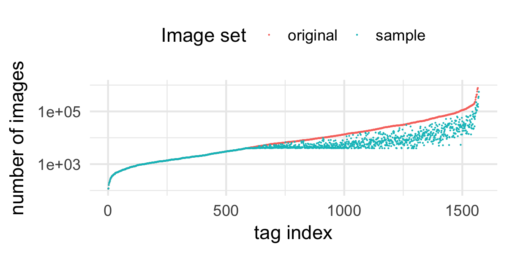
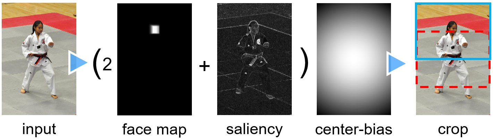
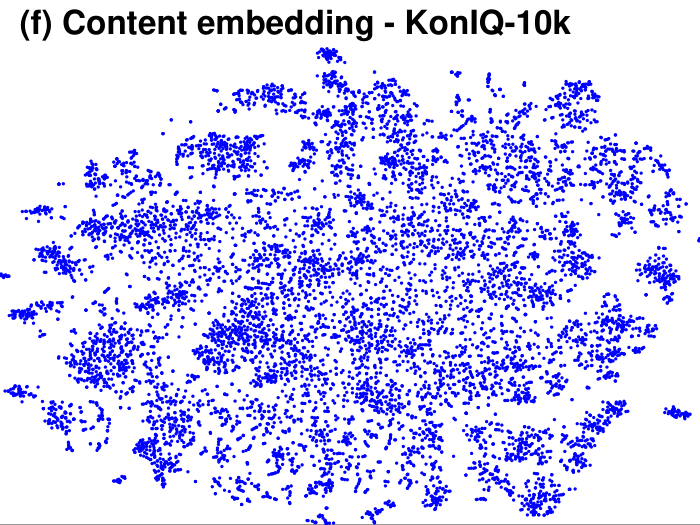
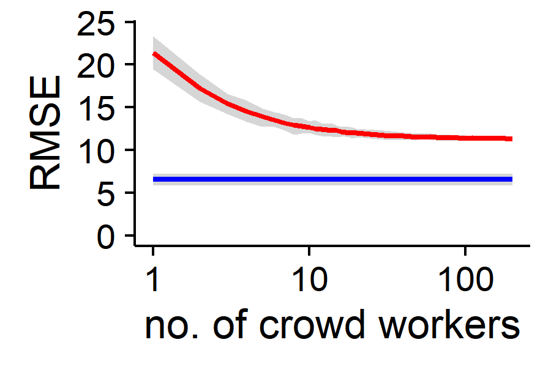
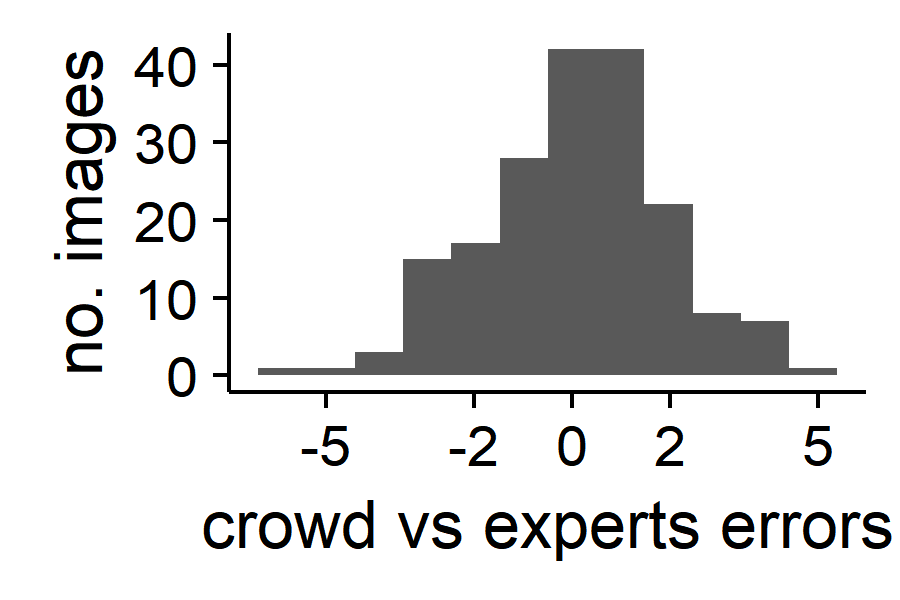
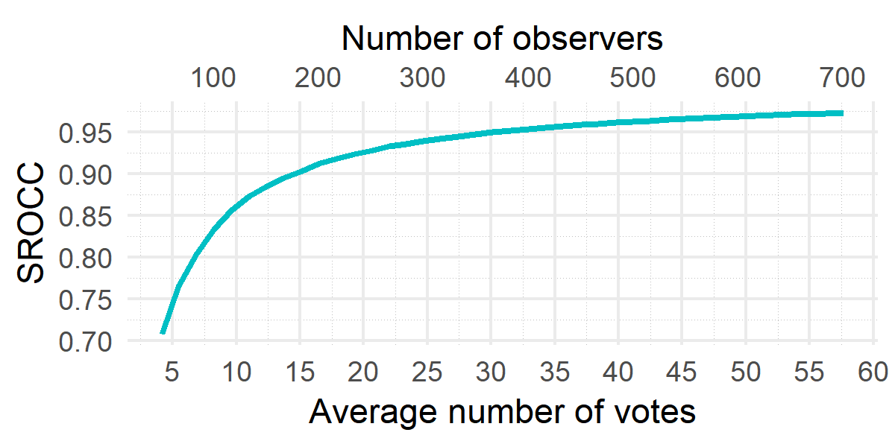
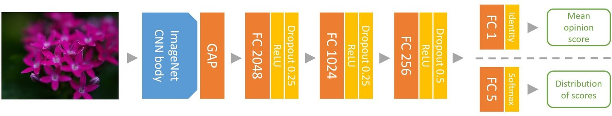
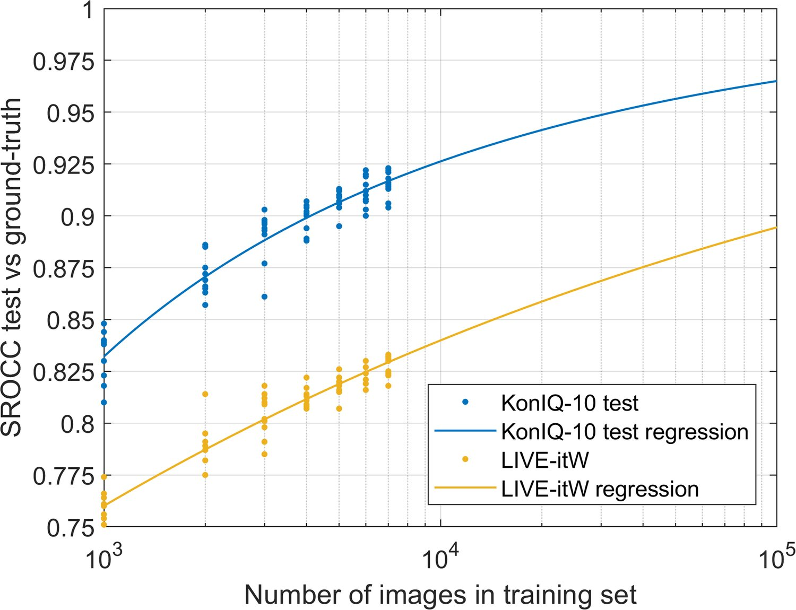
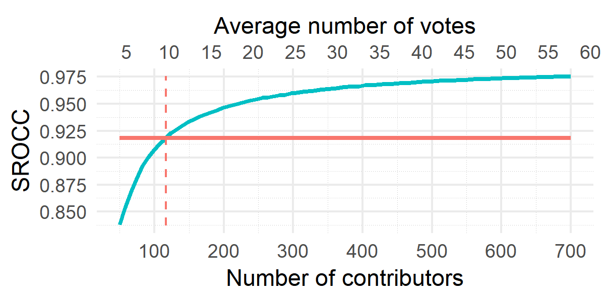
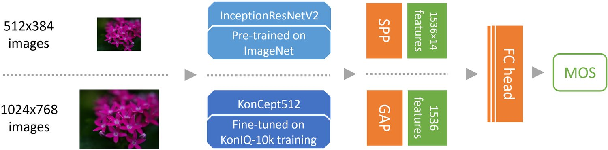

KonIQ-10k: An ecologically valid database for deep learning of blind image quality assessment
Deep learning methods for image quality assessment (IQA) are limited due to the small size of existing datasets. Extensive datasets require substantial resources both for generating publishable content and annotating it accurately. We present a systematic and scalable approach to creating KonIQ-10k, the largest IQA dataset to date, consisting of 10,073 quality scored images. It is the first in-the-wild database aiming for ecological validity, concerning the authenticity of distortions, the diversity of content, and quality-related indicators. Through the use of crowdsourcing, we obtained 1.2 million reliable quality ratings from 1,459 crowd workers, paving the way for more general IQA models. We propose a novel, deep learning model (KonCept512), to show an excellent generalization beyond the test set ( SROCC), to the current state-of-the-art database LIVE-in-the-Wild ( SROCC). The model derives its core performance from the InceptionResNet architecture, being trained at a higher resolution than previous models (). Correlation analysis shows that KonCept512 performs similar to having subjective scores for each test image.
Image Quality Assessment (IQA) plays an essential role in a broad range of applications ranging from image compression to machine vision, and more [1, 2, 3, 4]. Ideally, the visual quality of images is assessed by subjective user studies involving experts in a controlled environment to yield Mean Opinion Scores (MOS). The MOS is a direct measure of the perceived quality of images, which is important both for choosing the right technology and for making further improvements to existing imaging technologies. However, subjective studies are time-consuming and expensive and have limited applicability in practice. Hence, objective IQA, i.e., algorithmic estimation of visual quality has been a long-standing research topic, which has recently attracted more attention.
图像质量评估（IQA）在从图像压缩到机器视觉等广泛应用中发挥着重要作用 [1, 2, 3, 4]。理想情况下，图像的视觉质量通过在受控环境中由专家参与的主观用户研究来评估，从而得到平均意见分（MOS）。MOS 是对图像感知质量的直接度量，无论对选择合适的技术，还是对现有成像技术做进一步改进，都十分重要。然而，主观研究耗时且昂贵，实际应用范围有限。因此，客观 IQA（即以算法估计视觉质量）成为一个长期存在的研究课题，近年来受到更多关注。
According to the availability of pristine reference images, objective IQA methods are categorized as Full-Reference (FR), e.g., SSIM [5], Reduced-Reference (RR), e.g., RRED [6], and No-Reference (NR), e.g., CORNIA [7], HOSA [8]. In comparison to FR and RR, NR or Blind IQA (BIQA) is the more challenging problem among the three. BIQA is also the most practical of the three since reference-based comparisons are not available in many applications.
根据是否可获取原始参考图像，客观 IQA 方法分为全参考（FR），如 SSIM [5]；半参考（RR），如 RRED [6]；以及无参考（NR），如 CORNIA [7]、HOSA [8]。与 FR 和 RR 相比，NR 或无参考图像质量评估（BIQA）在三者中更具挑战性；由于许多应用中无法进行基于参考的比较，BIQA 也是三者中最实用的。
The development of objective IQA methods requires databases that provide images and carefully gathered subjective quality scores. Such databases are also required to improve existing methods via benchmarking and to provide a source of data for training and parameter fitting new models. In order for the trained models to be generally applicable, they need to use representative data from the real world, in terms of authenticity, scale, and diversity. The ecological validity of an IQA database refers to the representativeness of the visual collection for a wide range of real-world photos such as those available on the Internet, and the generalization potential of models trained on it. These are both important goals of our work.
客观 IQA 方法的发展需要能够提供图像及精心采集的主观质量分数的数据库。这类数据库也是通过基准评测改进现有方法、并为新模型的训练与参数拟合提供数据来源的必要条件。为使训练所得模型具有通用适用性，所用数据必须在真实性、规模与多样性上具备现实世界的代表性。IQA 数据库的生态效度指的是该视觉集合对广泛真实照片（例如互联网上的照片）的代表性，以及在其上训练所得模型的泛化潜力。这两点都是本文工作的重要目标。
Conventionally, creating an IQA database has followed a standard procedure: collect pristine images and artificially degrade them. Then a few volunteers, usually naive participants, would be asked to assess the quality of the distorted images. The first drawback of this approach is that the diversity of image content is limited since all the distorted images are degraded from a small set of pristine images. Second, the distortions are applied in very limited combinations, whereas ecologically valid distortions, such as those of public Internet images, are caused by combinations of distortions of types that differ from those in the databases. For instance, some authentic degradation types such as wrong focus or motion blur due to object movement are hard to reproduce artificially by distorting a pristine image. Last, but not least, the conventional approach for creating IQA datasets results in smaller databases, since assessing the quality of a large number of images in a lab setting is too costly. Nonetheless, lab studies are usually well controlled and produce strongly consistent opinions.
传统上，构建 IQA 数据库遵循一套标准流程：收集原始图像并人为加以劣化，随后请少量志愿者（通常是未受训练的参与者）评估失真图像的质量。这一做法的第一个缺陷是图像内容的多样性受限，因为所有失真图像都由少量原始图像劣化而来。其次，失真的施加方式组合非常有限，而具有生态效度的失真（如互联网公开图像上的失真）由多种失真类型组合而成，与数据库中的情形不同。例如，一些真实的退化类型（如对焦错误、物体运动导致的运动模糊）很难通过对原始图像施加失真来人工复现。最后同样重要的是，这种传统的构建方式得到的数据库规模较小，因为在实验室环境下评估大量图像的质量成本过高。尽管如此，实验室研究通常控制良好，能够产生高度一致的意见。
Recently, deep learning has achieved promising results in a number of computer vision tasks: image classification [9] [10], object detection [11] [12], and BIQA [13] [14] [15]. It is widely believed that a large-scale IQA database, diverse in content and authentic in distortions, could benefit the development and evaluation of deep learning approaches. However, all existing deep-learning-based BIQA methods are trained and evaluated on small and artificially distorted IQA databases. Assessing the quality of a very large number of images in a lab setting would require too many participants and too much time for preparing and running the experiment.
近来，深度学习在多项计算机视觉任务上取得了可喜成果：图像分类 [9] [10]、目标检测 [11] [12] 与 BIQA [13] [14] [15]。人们普遍认为，一个内容多样、失真真实的大规模 IQA 数据库将有助于深度学习方法的发展与评估。然而，现有所有基于深度学习的 BIQA 方法都在小规模、人工失真的 IQA 数据库上训练与评估。在实验室环境下评估极大量图像的质量，需要过多的参与者以及过多的实验准备与执行时间。
In order to address the limitations of existing databases, our work provides the following significant contributions:
为解决现有数据库的局限，本文工作带来以下重要贡献：
We designed an approach easily scaled, which allowed us to create the largest IQA database to date (KonIQ-10k), concerning the number of images and subjective scores:
Consisting of 10,073 images, selected from 10 million YFCC100M [16] entries. Our sampling algorithm ensures the diversity of content and distortions, making use of seven indicators for quality and one for content based on deep features.
For each image, 120 reliable quality ratings were obtained by crowdsourcing, performed by 1,459 crowd workers.
• 我们设计了一种易于扩展的方法，据此构建了迄今规模最大的 IQA 数据库（KonIQ-10k），其图像数量与主观评分数量均为最高：– 包含从 YFCC100M [16] 的 1000 万条记录中筛选出的 10,073 幅图像。我们的采样算法利用七项质量指标与一项基于深度特征的内容指标，确保内容与失真的多样性。– 每幅图像通过众包获得 120 个可靠的质量评分，由 1,459 位众包工作者完成。
We proposed an end-to-end deep-learning-based BIQA method:
It is a unified transfer learning approach based on fine-tuning a pre-trained Convolutional Neural Network (CNN).
With an unified architecture, compared the performance of five state-of-the-art CNNs.
Compared the performance of five loss functions governing the criteria by which the subjective scores are predicted, where two of them were used to predict MOS directly, and the other three were applied to predict distributions of ratings.
Explored the effect of the training set size on the performance of the proposed best model – KonCept512.
Showed that KonCept512, trained on KonIQ-10k, works well on another IQA database, all through cross-database testing.
• 我们提出了一种端到端的基于深度学习的 BIQA 方法：– 这是一种统一的迁移学习方法，基于对预训练卷积神经网络（CNN）的微调。– 在统一结构下比较了五种当前最佳 CNN 的性能。– 比较了决定主观分数预测准则的五种损失函数的性能，其中两种用于直接预测 MOS，另外三种用于预测评分分布。– 探究了训练集规模对所提最佳模型 KonCept512 性能的影响。– 通过跨数据库测试表明，在 KonIQ-10k 上训练的 KonCept512 在另一个 IQA 数据库上同样表现良好。
表 I：现有 IQA 数据库与 KonIQ-10k 的对比。
| No. of | No. of | No. of | Ratings | |||||
|---|---|---|---|---|---|---|---|---|
| Database | Year | Content | distorted images | Distortion type | distortion types | rated images | per image | Environment |
| IVC [17] | 2005 | 10 | 185 | artificial | 4 | 185 | 15 | lab |
| LIVE [18] | 2006 | 29 | 779 | artificial | 5 | 779 | 23 | lab |
| TID2008 [19] | 2009 | 25 | 1,700 | artificial | 17 | 1,700 | 33 | lab |
| CSIQ [20] | 2009 | 30 | 866 | artificial | 6 | 866 | 57 | lab |
| TID2013 [21] | 2013 | 25 | 3,000 | artificial | 24 | 3,000 | 9 | lab |
| CID2013 [22] | 2013 | 8 | 474 | authentic | 1214 | 480 | 31 | lab |
| LIVE-itW [23] | 2016 | 1,169 | 1,169 | authentic | N/A | 1,169 | 175 | crowdsourcing |
| Waterloo Exploration [24] | 2016 | 4,744 | 94,880 | artificial | 4 | 0 | 0 | lab |
| MDID [25] | 2017 | 20 | 1,600 | artificial | 5 | 1,600 | 3335 | lab |
| KADID-10k [26] | 2019 | 81 | 10,125 | artificial | 25 | 10,125 | 30 | crowdsourcing |
| KonIQ-10k | 2018 | 10,073 | 10,073 | authentic | N/A | 10,073 | 120 | crowdsourcing |
The related work is divided into two parts according to the contributions of the article. After briefly discussing the literature concerning the creation of benchmark IQA databases, we review state-of-the-art blind IQA methods.
相关工作按本文的贡献分为两部分。在简要讨论基准 IQA 数据库构建的文献之后，我们回顾当前最佳的无参考 IQA 方法。
A number of IQA databases have been released in recent years, aiming to help the development and evaluation of objective IQA methods, see Table I.
近年来已发布若干 IQA 数据库，旨在助力客观 IQA 方法的发展与评估，见表 I。
The early, conventionally built IQA database IVC [17] was released in 2005. LIVE [18], TID2008 [19], and CSIQ [20] were the most commonly used to develop, improve, and evaluate objective IQA methods. TID2008 was further extended into TID2013 [21] by including seven more distortion types. Rather than exclusively degrading each reference image with one type of distortion, the distorted images in MDID [25] were degraded by multiple distortions of random types and levels. The databases above were small-scaled, thus were unable to benefit the development of deep-learning-based IQA methods. KADID-10k [26] was proposed to address the limitation with 10,125 distorted images. However, such a database still contains minimal content types (81 reference images) and a few types of artificial distortions (25 distortions).
早期按传统方式构建的 IQA 数据库 IVC [17] 于 2005 年发布。LIVE [18]、TID2008 [19] 与 CSIQ [20] 是开发、改进与评估客观 IQA 方法最常用的数据库。TID2008 后来通过增加七种失真类型扩展为 TID2013 [21]。MDID [25] 中的失真图像并非仅用单一类型失真劣化每幅参考图像，而是由随机类型与强度的多重失真共同劣化。上述数据库规模较小，因而无法惠及基于深度学习的 IQA 方法的发展。KADID-10k [26] 以 10,125 幅失真图像来应对这一局限，但该数据库的内容类型仍然很少（81 幅参考图像），人工失真类型也有限（25 种）。
Virtanen et al. [22] were the first to introduce more authentic distortions, creating 480 images of 8 different scenes captured by 79 different cameras. However, the creation method was time-consuming and expensive and thus impractical for large-scale databases. Ghadiyaram et al. [23] created LIVE in the Wild (LIVE-itW) by asking a few photographers to capture 1,169 images by a variety of mobile cameras. Their visual quality was assessed by crowdsourcing experiments. Although this method provided an alternative way to reduce the time and cost for the IQA subjective study, the database size, as well as the content diversity, were still relatively low, having near-duplicate photos – w.r.t. content – that were captured from the same scenes.
Virtanen 等人 [22] 率先引入更真实的失真，用 79 台不同相机拍摄 8 个不同场景生成了 480 幅图像。然而，这种构建方式耗时且昂贵，对大规模数据库并不实用。Ghadiyaram 等人 [23] 请数位摄影师用多种移动相机拍摄 1,169 幅图像，构建了 LIVE in the Wild（LIVE-itW），并通过众包实验评估其视觉质量。尽管该方法为降低 IQA 主观研究的时间与成本提供了替代途径，但数据库规模与内容多样性仍然偏低，存在内容上的近似重复照片——它们拍摄自相同场景。
Ma et al. [24] created a database with 4,744 pristine images and 94,880 distorted images to validate their proposed mechanism called group MAximum Differentiation (gMAD) competition. Their database was meant to provide an alternative evaluation for the performance of IQA models by means of paired comparisons. Although the Waterloo Exploration database was the largest available in the field, its images were artificially distorted, thus unauthentic, and due to the lack of subjective ratings, it could not easily be used for developing new IQA methods that rely on them.
Ma 等人 [24] 构建了一个包含 4,744 幅原始图像与 94,880 幅失真图像的数据库，用以验证其提出的分组最大差异（gMAD）竞争机制。该数据库旨在通过成对比较为 IQA 模型的性能提供另一种评估方式。尽管 Waterloo Exploration 数据库是当时该领域规模最大的，但其图像为人工失真，因而不真实；并且由于缺乏主观评分，它难以用于开发依赖这些评分的新 IQA 方法。
In comparison to lab-based IQA studies that are limited in size, crowdsourcing has been successfully applied for larger databases of images [23] and videos [27] (to about 1,000 stimuli). Although it was believed that data collected by crowdsourcing was less reliable, Siahaan et al. [28] and other studies [29] verified that crowd workers could generate reliable results under specific experimental setups.
与规模受限的实验室 IQA 研究相比，众包已成功应用于更大规模的图像 [23] 与视频 [27] 数据库（约 1,000 个刺激）。尽管人们曾认为众包采集的数据可靠性较低，但 Siahaan 等人 [28] 与其他研究 [29] 证实，在特定的实验设置下，众包工作者能够产生可靠的结果。
Taking a different approach to traditional rating datasets, Yu et al. [30] built an extensive, 12,853 natural images database annotating the severity of seven perceptual defect types via crowdsourcing. The authors collected a minimal number of ratings for each defect (five), resulting in less precise subjective scores. This database does not contain traditional quality scores, so we did not include it in Table I.
Yu 等人 [30] 采用不同于传统评分数据集的思路，构建了一个包含 12,853 幅自然图像的大规模数据库，通过众包标注七种感知缺陷类型的严重程度。作者对每种缺陷收集的评分数很少（五个），导致主观分数精度不足。该数据库不含传统质量分数，因此我们没有将其列入表 I。
In terms of the methodology used, we can categorize BIQA into conventional and deep-learning-based methods.
就所用方法而言，可将 BIQA 分为传统方法与基于深度学习的方法。
Similar to conventional image processing and computer vision tasks, conventional BIQA methods require domain experts to engineer and design a feature extractor carefully. The feature extractor will transform raw image data into a representative feature vector from which a regression model, e.g., Support Vector Regression (SVR), can predict the MOS.
与传统的图像处理与计算机视觉任务类似，传统 BIQA 方法需要领域专家精心设计特征提取器。该特征提取器把原始图像数据转换为有代表性的特征向量，回归模型（如支持向量回归（SVR））再据此预测 MOS。
Many conventional BIQA methods were derived from the Natural Scene Statistics (NSS) model [31]. Such methods seek to capture the natural statistical behavior of images. Moorthy et al. proposed the BIQI [32] method, in which a description of Distorted Image Statistics (DIS) captures the NSS changes resulting from distortions. With DIS features, the method has a two-step framework: image distortion classification followed by a distortion-specific quality assessment. With the same two-step framework, two more methods, DIIVINE [33] and SSEQ [34], were proposed to improve the performance of quality assessment. BLIINDS-II [35] relies on a Bayesian inference model to predict MOS based on certain extracted features which were derived using an NSS model of the image’s discrete cosine transform coefficients. A simple but efficient method called BRISQUE, was proposed in [36]. Using scene statistics of locally normalized luminance coefficients, it quantified possible losses of naturalness in the image due to the presence of distortions.
许多传统 BIQA 方法源自自然场景统计（NSS）模型 [31]，这类方法试图刻画图像的自然统计行为。Moorthy 等人提出 BIQI [32] 方法，用失真图像统计（DIS）描述由失真引起的 NSS 变化。基于 DIS 特征，该方法采用两步框架：先做图像失真分类，再做失真特定的质量评估。DIIVINE [33] 与 SSEQ [34] 沿用同一两步框架，进一步提升了质量评估性能。BLIINDS-II [35] 依赖贝叶斯推断模型，基于从图像离散余弦变换系数的 NSS 模型导出的若干特征来预测 MOS。文献 [36] 提出了一种简单而高效的方法 BRISQUE：它利用局部归一化亮度系数的场景统计量，量化图像因失真存在而可能损失的自然性。
Another direction for conventional BIQA methods is the Bag-of-Words (BoW) model that uses local features. Ye et al. [7] proposed an unsupervised feature learning approach named CORNIA. It learned a dictionary by clustering raw image patches extracted from a set of unlabeled images. An image was represented with a histogram for quality assessment by softly assigning raw image patches to the dictionary with max pooling. Following the same idea, HOSA was proposed in [8]. Apart from softly assigning patches to the corresponding means of each cluster, HOSA softly aggregates the differences of high order statistics (mean, variance, and the skew present) between raw image patches and corresponding clusters. This global quality-aware image representation reduced computational costs and improved performance.
传统 BIQA 方法的另一个方向是使用局部特征的词袋（BoW）模型。Ye 等人 [7] 提出了一种无监督特征学习方法 CORNIA：通过对从一组无标签图像中提取的原始图像块做聚类来学习字典，再用最大池化把原始图像块软分配到字典上，以直方图表示图像用于质量评估。HOSA [8] 沿用同一思路，除把图像块软分配到各聚类均值外，还软聚合原始图像块与对应聚类之间高阶统计量（均值、方差与偏度）的差异。这种全局的质量感知图像表示降低了计算开销并提升了性能。
Instead of carefully designing handcrafted features, deep-learning-based BIQA methods strive to automatically discover representations from raw image data that are most suitable for predicting quality scores.
基于深度学习的 BIQA 方法不再精心设计手工特征，而是力求从原始图像数据中自动发现最适合预测质量分数的表示。
Due to the small size of existing IQA databases unsuitable for end-to-end learning, several BIQA methods applied deep learning methods as feature extractors. Ghadiyaram et al. [37] used an unsupervised deep neural network, i.e., deep belief nets, to discover representative features for quality prediction. In [15], a VGG16 network was fine-tuned as a feature extractor. Their best method was called DeepBIQ, and it predicts image quality by average-pooling the predicted MOS on multiple image patches, where the score of each patch is determined by training an SVR.
由于现有 IQA 数据库规模过小、不适合端到端学习，一些 BIQA 方法把深度学习方法用作特征提取器。Ghadiyaram 等人 [37] 用无监督深度神经网络（即深度信念网络）来发现用于质量预测的代表性特征。文献 [15] 微调了一个 VGG16 网络作为特征提取器，其最佳方法称为 DeepBIQ：它对多个图像块预测的 MOS 做平均池化来预测图像质量，其中每个图像块的分数由训练一个 SVR 确定。
Similarly, the BLINDER model was proposed by Gao et al. [38]. By feeding an image into a VGG16 network and generating one feature vector in each layer, a quality score was created and then estimated for each feature vector by SVR. The overall quality of the image was the mean of these level-wise predicted quality scores.
类似地，Gao 等人 [38] 提出了 BLINDER 模型：把图像输入 VGG16 网络，在每一层生成一个特征向量，用 SVR 为每个特征向量估计一个质量分数，图像的整体质量取这些层级预测质量分数的均值。
To address the limitation of small training data and to implement end-to-end learning, an alternative way was introduced to train on sampled image patches instead of entire images. The assumption made was that a set of sampled image patches has the same quality score as the entire image. The quality of an image was estimated by averaging the predicted quality scores of sampled image patches. This idea was implemented in [14] and [13] by training a CNN with RGB image patches. The CNN model in [13] is deeper, having 12 layers, compared to the seven layers in [14]. Training on image patches allowed it to train a deep CNN from scratch. However, it ignored content information of an image, whereas IQA had been shown to be content-dependent [39].
为克服训练数据少的限制并实现端到端学习，另一种思路是在采样的图像块而非整幅图像上训练，其假设是一组采样图像块与整幅图像具有相同的质量分数，图像质量通过对采样图像块的预测质量分数取平均来估计。文献 [14] 与 [13] 用 的 RGB 图像块训练 CNN 实现了这一想法，其中 [13] 的 CNN 模型更深，有 12 层，而 [14] 为七层。在图像块上训练使得从零开始训练深层 CNN 成为可能；但它忽略了图像的内容信息，而 IQA 已被证明依赖于内容 [39]。
Transfer learning was also applied to address the small data issue. Liu et al. proposed the RankIQA method [40]. By generating pairs of pristine and artificially distorted images (for which the quality ordering was known), the authors trained a Siamese Network to rank the quality of image pairs. The quality score of a single image was estimated by fine-tuning a network that relied on the knowledge represented (its features) in the Siamese Network. Ma et al. [41] proposed the MEON model. It was a multi-task model consisting of two sub-networks, a distortion identification network, and a quality prediction network, where both the networks shared their weights in early layers. Since it is easy to generate training data synthetically, it trained the distortion identification sub-network to have pre-trained weights in the first layers. With the pre-trained early layers and the outputs of the first sub-network, training a quality prediction sub-network on the small IQA databases became feasible. Transfer learning is not limited to blind IQA, Prabhushankar et al. [42] proposed MS-UNIQUE, an FR-IQA method. The quality feature vector of a given image was represented by multiple linear decoders, which had been previously trained on 100,000 image patches from ImageNet. The visual quality was estimated by comparing the feature vectors corresponding to the original and distorted images.
迁移学习也被用于应对数据少的问题。Liu 等人提出 RankIQA 方法 [40]：通过生成原始图像与人工失真图像的图像对（其质量排序已知），训练一个孪生网络对图像对的质量排序；单幅图像的质量分数则通过微调一个依赖该孪生网络所表示知识（其特征）的网络来估计。Ma 等人 [41] 提出 MEON 模型，这是一个由失真识别网络与质量预测网络两个子网络构成的多任务模型，二者在浅层共享权重。由于合成训练数据容易生成，失真识别子网络被训练以获得浅层的预训练权重；借助这些预训练浅层与第一个子网络的输出，在小规模 IQA 数据库上训练质量预测子网络变得可行。迁移学习并不限于无参考 IQA：Prabhushankar 等人 [42] 提出了 FR-IQA 方法 MS-UNIQUE，给定图像的质量特征向量由多个线性解码器表示，这些解码器此前在 ImageNet 的 100,000 个图像块上训练得到，视觉质量通过比较原始图像与失真图像对应的特征向量来估计。
Talebi et al. [43] introduced an end-to-end trained framework that relies on existing object-classification-architectures such as MobileNet, VGG16, and Inception-v2, with an added simple regression head to predict the distribution of scores for either aesthetics and image quality assessment. They used two fully-connected layers on top of the base network, thus limiting the application of their approach to images with a fixed size of pixels. They used Stochastic Gradient Descent with very low learning rates in order to avoid early over-fitting. We consider their suggestions for our framework, and further expand on them.
Talebi 等人 [43] 引入了一个端到端训练框架，它依托现有的目标分类架构（如 MobileNet、VGG16 与 Inception-v2），并添加一个简单的回归头来预测美学与图像质量评估的分数分布。他们在基础网络之上使用两个全连接层，因而使其方法只能应用于固定尺寸 像素的图像。为避免早期过拟合，他们采用学习率极低的随机梯度下降。我们在自己的框架中采纳了他们的建议，并做了进一步拓展。
Dendi et al. [44] used a convolutional auto-encoder for distortion map generation. The training ground-truth distortion map was estimated by a well-known FR-IQA measure, i.e., SSIM. The authors show that the performance of conventional BIQA methods can be improved by predicting distortion maps.
Dendi 等人 [44] 用卷积自编码器生成失真图，训练所用的失真图真值由一种知名的 FR-IQA 度量（即 SSIM）估计得到。作者表明，预测失真图可以提升传统 BIQA 方法的性能。
Zhang et al. [45] used a Siamese network to learn to rank image pairs. The ground-truth binary labels for the Siamese network are obtained from the corresponding image MOS. The absolute quality score for an image is reconstructed from the pair-wise predictions using the Bradley-Terry model.
Zhang 等人 [45] 用孪生网络学习对图像对排序，孪生网络所用的二值真值标签由相应图像的 MOS 得到，图像的绝对质量分数则用 Bradley-Terry 模型从成对预测中重建。
The primary use of our IQA database is training better deep learning models. Existing IQA databases are either too small or rely on a limited set of pristine images and artificial, non-authentic quality degradations. Since IQA is content-dependent and authentic image degradations are essential for accurate quality predictions, we created an extensive collection of images in-the-wild to depict a broad range of appropriate content and authentic distortions.
我们构建 IQA 数据库的主要用途是训练更好的深度学习模型。现有 IQA 数据库要么规模过小，要么依赖有限的原始图像集合与人工的、非真实的质量退化。由于 IQA 依赖内容，且真实的图像退化对准确的质量预测至关重要，我们收集了一个大规模的野外图像集合，以涵盖广泛的恰当内容与真实失真。
To build a balanced dataset, we relied on multiple indicators that characterize image quality. Indicator values in-the-wild are predominantly imbalanced. Vonikakis et al. [46] have argued for creating better datasets via re-targeting the distribution of multiple indicators, such that all values along each dimension are more equally represented. In a similar vein, Hosu et al. [27] have employed quality-related indicators that are used to create diverse datasets by ”fair-sampling”, another way of describing the balancing process.
为构建均衡的数据集，我们依赖多项刻画图像质量的指标。野外数据的指标值分布高度不均衡。Vonikakis 等人 [46] 主张通过重新设定多个指标的分布来构建更好的数据集，使每一维度上的各个取值得到更均衡的体现。类似地，Hosu 等人 [27] 采用与质量相关的指标，通过“公平采样”（即对均衡化过程的另一种表述）来构建多样化数据集。
Our goal of creating an authentically distorted database was achieved by selecting images from a massive public multimedia database, YFCC100m [16]. We randomly selected approximately ten million (9,974,030) image records. Then we filtered them down in two stages obtaining the final database.
我们构建真实失真数据库的目标，是通过从一个大规模公开多媒体数据库 YFCC100m [16] 中挑选图像来实现的。我们随机选取了约一千万（9,974,030）条图像记录，随后分两个阶段筛选，得到最终的数据库。
In the first stage, we selected images with an appropriate Creative Commons (CC) license that allows editing and redistribution and chose those with available machine tags (from YFCC100m) and a resolution between and . From this set of 4,807,816 images, we proposed a new tag-based sampling procedure that was used to select one million images such that their machine tag distribution covers the larger set well, see Fig. 1.
在第一阶段，我们筛选出带有允许编辑与再分发的 Creative Commons（CC）许可、且具备可用机器标签（来自 YFCC100m）、分辨率介于 与 之间的图像。在这 4,807,816 幅图像的集合上，我们提出了一种新的基于标签的采样流程，用于选取一百万幅图像，使其机器标签分布能很好地覆盖更大的集合，见图 1。
In the second stage, all images in the set of one million that were larger than were downloaded and re-scaled to pixels, and cropping was applied to maintain the pixel-aspect ratio. In order to keep the faces’ salient parts of the image in the frame, we designed our own cropping method. It relies on the Viola-Jones face detector and the saliency method of Hou et al. [47]. 13,000 images were then sampled while enforcing a uniform distribution across eight image indicators. Duplicates were removed, using a sampling strategy that accounts for category and indicators. This collection was manually filtered for inappropriate content resulting in our KonIQ-10k11 1 The database and code is available at http://database.mmsp-kn.de dataset of 10,073 images, slightly above our target size that we had set to 10,000.
在第二阶段，我们把这一百万集合中尺寸大于 的图像全部下载，重新缩放至 像素，并通过裁剪保持像素长宽比。为使画面中人脸等显著部分保留在取景框内，我们设计了自己的裁剪方法，它依赖 Viola-Jones 人脸检测器与 Hou 等人 [47] 的显著性方法。随后在八项图像指标上强制均匀分布，采样出 13,000 幅图像；再用一种同时考虑类别与指标的采样策略去除重复图像。该集合经人工筛除不当内容后，形成了包含 10,073 幅图像的 KonIQ-10k11 1 数据库与代码见 http://database.mmsp-kn.de 数据集，略高于我们设定的 10,000 幅目标规模。

图 1：从 480 万幅图像中采样 100 万幅。标签按其在预采样集合中的频次升序排列（红色）。青色直方图为每个标签的采样图像数量。两条直方图在配额 幅图像／标签处开始分岔。理想情况下，采样后的直方图（青色）在分岔点之后应当是平的，但由于每幅图像可带有多个标签，这一点无法实现。
Downloading 4.8 million images consumes significant bandwidth and storage space. Hence, we devised a way to shrink the set from one million images to maintain content diversity. We aimed to achieve a ”uniform” coverage of tags by sampling at least a certain number of images for each (a quota). This is generally not precisely possible, as images have more than one tag (9.2 on average). Therefore, we devised a simple and computationally efficient sampling heuristic while keeping the above objectives in mind. The heuristic chooses images filling the given quota for less popular tags first until the total number of required images is selected. See the appendix for more details. The distribution of images by tag is shown in Fig. 1.
下载 480 万幅图像会消耗大量带宽与存储空间，因此我们需要一种方法把集合从一百万幅缩小，同时保持内容多样性。我们的目标是通过为每类标签至少采样一定数量的图像（一个配额）来实现标签的“均匀”覆盖。由于图像带有多个标签（平均 9.2 个），这通常无法精确做到。为此，我们设计了一种简单且计算高效的采样启发式方法，同时兼顾上述目标：该启发式优先选取图像以填满较冷门标签的给定配额，直到选够所需的图像总数。更多细节见附录。按标签的图像分布见图 1。
图 2：从 YFCC100m 更大的 866,976 幅图像子集（蓝色）与采样得到的 10,073 幅图像（红色）中提取的指标值分布。与原始分布相比，采样流程在后处理之后使每个指标上的分布更加均匀。
It is important to standardize the resolution of all images in our database. It applies to user studies, computing various measures, and using the images for training, or benchmarking IQA methods. We chose pixels as a standard resolution, as we found that 95% of our crowd workers’ devices have at least this resolution. Rather than shrinking images unevenly and thus changing their aspect ratio, we cropped them, as changing an image’s aspect ratio affects its perceived quality and reduces the authenticity of the image collection.
统一数据库中所有图像的分辨率十分重要，这关系到用户研究、各种度量的计算，以及将图像用于训练或基准评测 IQA 方法。我们选择 像素作为标准分辨率，因为我们发现 95% 的众包工作者设备至少达到这一分辨率。我们没有采用不均匀缩小图像（从而改变其长宽比）的做法，而是进行裁剪，因为改变图像长宽比会影响其感知质量，并削弱图像集合的真实性。
A naive approach to cropping images is choosing their central region and removing the rest. After trying this strategy in an early experiment, we observed that wrong crops such as those that remove essential parts of the image, like faces, reduce the perceived quality of images compared to the case where the entire image is presented. Hence, we devised a selective approach that does not create some of the more frequent unintended degradations.
一种朴素的裁剪方式是选取图像中央区域、舍弃其余部分。我们在早期实验中尝试过这一策略，观察到错误的裁剪（例如裁掉了人脸等重要部分）相比呈现完整图像会降低图像的感知质量。因此，我们设计了一种选择性方法，避免制造某些较常见的非预期退化。
The aim was to keep faces and salient areas inside the crop and to process one million images sufficiently fast. We combined the Viola-Jones face detector [48] over multiple poses (front, profile left, and right) with a saliency detection method [47] into an importance map, see Fig. 3. The authors in [47] argued that experimental data shows their method identifies foreground content well, which is important for us. Sharper areas are more likely to be relevant for image quality – for instance, in a case where an image has out of focus regions, and we would rather focus on the subject. Last, but not least, the saliency method we used has a small computational cost.
目标是让人脸与显著区域保留在裁剪框内，同时足够快地处理一百万幅图像。我们把覆盖多个姿态（正面、左侧面、右侧面）的 Viola-Jones 人脸检测器 [48] 与一种显著性检测方法 [47] 组合成重要性图，见图 3。文献 [47] 的作者指出，实验数据表明他们的方法能很好地识别前景内容，这对我们很重要；更清晰的区域更可能与图像质量相关——例如图像中存在失焦区域时，我们更希望聚焦于主体。最后同样重要的是，我们所用的显著性方法计算开销很小。
The crop had to maximize the mean importance. We chose the crop location by convolving a kernel the size of with the importance map. The kernel value was everywhere except for a border of pixels on all sides where it was . The convolution was efficiently done in the frequency domain leading to an average crop time below one second per image on a standard desktop CPU (2.4 GHz Xeon).
裁剪需要使平均重要性最大化。我们用一个尺寸为 的核与重要性图做卷积来选取裁剪位置：核值处处为 ，但四周 像素宽的边框处为 。卷积在频域高效完成，在一台标准台式机 CPU（2.4 GHz Xeon）上平均每幅图像的裁剪时间低于一秒。

图 3：我们把数据库中的每幅图像裁剪到 的标准尺寸，裁剪时考虑人脸的存在、显著性与中心偏置。中间三张图组合成重要性图。最右侧图像中浅蓝色（实线）所示的裁剪结果正确地包含了人物面部，而采用朴素的居中裁剪（红色虚线）则会把人脸从画面中裁掉。
Our objective was to select a subset of images while ensuring the diversity of content and distortion authenticity. The latter is implicit due to the source of the images. We ensured content diversity using a sampling procedure that relies on quality-related indicators and a category-features.
我们的目标是筛选出一个图像子集，同时确保内容的多样性与失真的真实性。后者由图像来源天然保证。我们通过一个依赖质量相关指标与类别特征的采样流程来确保内容多样性。
We collected several image quality indicators relating to brightness, colorfulness, contrast, noise, sharpness, and No-Reference (NR) IQA measures. For some of them, several implementations were available. We discarded those that were too slow to be run on our set of one million images. We conducted preliminary subjective studies and kept four measures that are well-correlated with human perception, namely brightness, colorfulness [49], Root Mean Square (RMS) contrast, and sharpness [50]. Besides these, we considered three other indicators: image bitrate, resolution (heightwidth), and JPEG compression quality (image meta-data); these are highly correlated with image quality.
我们收集了若干与亮度、色彩丰富度、对比度、噪声、清晰度相关的图像质量指标，以及无参考（NR）IQA 度量。其中一些指标有多种实现，我们舍弃了在百万图像集合上运行过慢的那些。通过初步的主观研究，我们保留了四项与人类感知相关性良好的度量，即亮度、色彩丰富度 [49]、均方根（RMS）对比度与清晰度 [50]。此外，我们还考虑了另外三项指标：图像比特率、分辨率（高宽）与 JPEG 压缩质量（图像元数据）；它们与图像质量高度相关。
Each quality indicator identifies an image attribute, measuring its magnitude or presence as a scalar value. Extreme values for an indicator relate to severe distortion, either due to the absence or abnormal emphasis on that particular aspect. If we were to sample our image database randomly, it is unlikely that images having “abnormal” attribute values would be selected. Therefore, we sampled images with a broader range of indicator values, and thus potentially more distortions types.
每个质量指标刻画一项图像属性，以标量值度量其大小或存在程度。指标的极端取值对应严重失真，可能源于该属性的缺失或异常突出。若随机采样图像数据库，具有“异常”属性值的图像不太可能被选中。因此我们采样了指标值范围更广的图像，从而可能涵盖更多失真类型。
Nonetheless, the absolute extremes of the indicator ranges are distorted to an excessive degree and were uninformative, i.e., overly dark or bright, overly colorful, and others. Therefore, before performing the sampling procedure, we trimmed the extreme ends of each indicator distribution. We computed the z-score of an indicator value as , where and are the mean and standard deviation of a sample for the given indicator. By removing all images with an absolute z-scored indicator value greater than 3, the dataset size shrank from one million to 866,976.
尽管如此，指标取值范围的绝对极值失真过度且缺乏信息量，例如过暗或过亮、色彩过于浓艳等。因此在执行采样流程之前，我们截断了每个指标分布的两端。我们把指标值 的 z 分数计算为 ，其中 与 分别为该指标样本的均值与标准差。剔除 z 分数绝对值大于 3 的所有图像后，数据集规模从一百万缩减到 866,976。
Until this point, we ensured content diversity by sampling one million images based on machine tags provided by YFCC100m. The tags had been assigned using a deep neural network for classification and represented a few most likely categories per image. Furthermore, we selected a subset of 866,976 images, such that to exclude extreme quality indicator values.
至此，我们基于 YFCC100m 提供的机器标签采样一百万幅图像，确保了内容多样性。这些标签由一个用于分类的深度神经网络给出，表示每幅图像最可能的若干类别。此外，我们选出了 866,976 幅图像的子集，以排除极端的质量指标值。
To further improve the content description, we made use of more comprehensive -dimensional deep-features extracted from a VGG-16 model pre-trained on ImageNet [9]. The features represent the activations of the last fully-connected layer (usually named FC7) before the final layer that returns class likelihoods.
为改进内容描述，我们使用了从在 ImageNet [9] 上预训练的 VGG-16 模型中提取的更为全面的 维深度特征。这些特征表示返回类别似然的最后一层之前那个全连接层（通常称为 FC7）的激活值。
Since the deep-features are 4096-dimensional vectors, we applied a bag-of-words model to quantize them. That is, we ran -means to compute 200 centroids, mapping each deep-feature to the nearest cluster. The cluster indices came to represent our content indicator.
由于深度特征是 4096 维向量，我们用一个词袋模型对其进行量化：运行 -means 计算出 200 个聚类中心，把每个深度特征映射到最近的簇，簇的索引即构成我们的内容指标。
For the actual sampling, we applied the method proposed by Vonikakis et al. [46], enforcing a uniform target distribution for each indicator. For the quality indicators, we quantize each indicator value into bins. The content indicator is already quantized as the cluster index. The sampling procedure jointly optimizes the shape of the histograms along all indicator dimensions, using Mixed Integer Linear Programming (MILP).
实际采样时，我们采用 Vonikakis 等人 [46] 提出的方法，为每个指标强制一个均匀的目标分布。对于质量指标，我们把每个指标值量化为 个分箱；内容指标已通过簇索引完成量化。该采样流程用混合整数线性规划（MILP）联合优化所有指标维度上直方图的形状。
We used bins for all seven scalar indicators. We ran the sampling procedure – generating 13,000 images – with uniformly sampled indicators. The set is larger than the target of 10,000 to allow for removing duplicates and other post-filtering.
我们对全部七项标量指标使用 个分箱，在指标均匀采样的条件下运行采样流程，生成 13,000 幅图像。该集合大于 10,000 的目标，以便去除重复项与做其他后处理过滤。
The uniform sampling strategy ensures the diversity of the image database on a broad scale. However, due to the binning procedure, identical copies or near-duplicate images can be sampled together, i.e., photos of a scene taken from slightly different views.
均匀采样策略在宏观上确保了图像数据库的多样性。但由于分箱操作的存在，完全相同的副本或近似重复的图像可能被一起采样到，例如从略微不同的视角拍摄的同一场景照片。
We devised a way to remove near-duplicates. First, the values of each indicator were scaled to the interval . We computed all pairwise euclidean distances between images from the source dataset in the 8-dimensional indicator, plus content space. The distance in the content space is set to 0 if two images are part of the same cluster, and one otherwise. Duplicate and near-duplicate images are expected to correspond to small distances . Thus, by iteratively removing a member of the closest pair, we can effectively remove near-duplicates. We removed 2,000 images in this way.22 2 See Fig. 14, supplementary material, for examples.
我们设计了一种去除近似重复的方法。首先把各指标的值缩放到 区间，然后在 8 维指标加内容的空间中计算源数据集中图像 之间所有成对的欧氏距离 ；若两幅图像属于同一簇，内容空间中的距离设为 0，否则设为 1。重复与近似重复的图像 预计对应较小的距离 。因此，通过迭代地移除距离最近的一对中的一员，即可有效去除近似重复。我们以此方式剔除了 2,000 幅图像。22 2 示例见补充材料图 14。
To ensure the quality of our database, we manually removed images showing too little content, namely text screenshots, text scans, heavily under-exposed images, or inappropriate images showing mature content.33 3 See Fig. 15, supplementary material, for examples. In the end, 10,073 images remained to make up our KonIQ-10k database; see Fig. 2.
为保证数据库质量，我们人工剔除了内容过少的图像，如文字截图、文字扫描件、严重曝光不足的图像，以及含有成人内容的不当图像。33 3 示例见补充材料图 15。最终剩下 10,073 幅图像，构成我们的 KonIQ-10k 数据库，见图 2。

图 4：TID2013、LIVE-itW 与 KonIQ-10k 的多样性对比。（a）-（d）分别为亮度、色彩丰富度、对比度与清晰度的分布对比。（f）-（h）为通过 t-SNE 得到的二维深度特征嵌入。（e）为 MOS 分布。
We selected LIVE-itW and TID2013 to compare their diversity with KonIQ-10k in some aspects. Here, LIVE-itW and TID2013 are the most representative, authentically distorted, and artificially distorted databases. Their distributions in brightness, colorfulness, contrast, and sharpness are depicted in Fig. 4(a)-(d), respectively. KonIQ-10k is more diverse than compared databases in each of those indicators. Examples of images of KonIQ-10k are shown in Fig. 17 (Supplementary Material), where five images are uniformly sampled in each of the four indicators.
我们选取 LIVE-itW 与 TID2013，在若干方面与 KonIQ-10k 做多样性比较。这里 LIVE-itW 与 TID2013 分别是真实失真与人工失真数据库中最具代表性的。它们在亮度、色彩丰富度、对比度与清晰度上的分布分别见图 4（a）-（d）。KonIQ-10k 在这些指标上都比所比较的数据库更为多样。KonIQ-10k 的示例图像见补充材料图 17，其中在四个指标上各均匀采样了五幅图像。
To compare the content diversity, we embedded the 4096-dimensional VGG-16 deep features from the databases into a 2D subspace by t-SNE [51]. The visualization is shown in Fig. 4(f)-(h). Since just a few photographers captured LIVE-itW images, their content only covered a small region of KonIQ-10k, not to mention TID 2013, which was generated from only 25 reference images. After aligning the scales, their MOS distributions are illustrated in Fig. 4(e). Examples of images with uniformly sampled MOS are shown in Fig. 18 (Supplementary Material).
为比较内容多样性，我们用 t-SNE [51] 把各数据库的 4096 维 VGG-16 深度特征嵌入到二维子空间，可视化结果见图 4（f）-（h）。由于 LIVE-itW 的图像仅由少数摄影师拍摄，其内容只覆盖了 KonIQ-10k 的一小块区域，更不用说仅由 25 幅参考图像生成的 TID2013。在对齐尺度后，它们的 MOS 分布见图 4（e）。按 MOS 均匀采样的示例图像见补充材料图 18。
To assess the visual quality of the 10,073 selected images, we performed a large-scale crowdsourcing experiment at CrowdFlower.com (now Figure-Eight.com). The experiment first presented workers with a set of instructions, including the definition of “technical image quality”, some considerations when giving ratings, examples of often encountered distortion types, and images with different qualities. The subjects were then instructed to consider the following types of degradations: noise, JPEG artifacts, aliasing, lens and motion blur, over-sharpening, wrong exposure, color fringing, and over-saturation. We used the standard 5-point Absolute Category Rating (ACR) scale, i.e., bad (1), poor (2), fair (3), good (4), and excellent (5).
为评估所选 10,073 幅图像的视觉质量，我们在 CrowdFlower.com（现 Figure-Eight.com）上进行了一次大规模众包实验。实验首先向工作者呈现一组说明，包括“技术图像质量”的定义、评分时的若干考量、常见失真类型的示例，以及不同质量的图像。随后要求受试者考虑以下退化类型：噪声、JPEG 伪影、混叠、镜头模糊与运动模糊、过度锐化、曝光不当、色散与过饱和。我们采用标准的 5 级绝对类别评分（ACR）量表，即差（1）、较差（2）、一般（3）、好（4）与优秀（5）。
We devised a set of test questions, i.e., rating questions with known answers, to filter reliable crowd workers and for analyzing the overall quality of the collected ratings. The opinions of domain experts are generally more reliable, and thus provide a good source of information for setting test questions. We involved 11 freelance photographers who had, on average, more than three years of professional experience. We asked them to rate the quality of 240 images: 29 were pristine high-quality images, carefully selected beforehand, 21 were artificially degraded using 12 types of distortions, and the remaining 190 images were randomly selected from Flickr (not part of our 10k dataset). The distortions included blur, artifacts, contrast, and color degradation.
我们设计了一组测试题（即答案已知的评分题），用于筛选可靠的众包工作者，并分析所收集评分的整体质量。领域专家的意见通常更为可靠，因而为测试题的设置提供了良好的信息来源。我们邀请了 11 位自由摄影师，他们的平均专业经验超过三年，请他们对 240 幅图像的质量评分：其中 29 幅为事先精心挑选的高质量原始图像，21 幅用 12 种失真类型人工劣化，其余 190 幅从 Flickr 随机选取（不属于我们的 1 万幅数据集）。所涉失真包括模糊、伪影、对比度与色彩退化。
Based on this set of images and the mean opinion score from the freelancers, we generated test questions for our crowdsourcing experiment. The correct answers were based on the rounded values of the freelancers’ MOS one standard deviation. We allowed a margin for error, tolerating some subjectivity in the participants’ rating behavior. As a result, all images had, at most, three valid answer choices.
基于这组图像与自由摄影者的平均意见分，我们为众包实验生成了测试题。正确答案取自自由摄影者 MOS 一个标准差的舍入值。我们允许一定的误差余地，以容忍参与者评分行为中的主观性。最终每幅图像至多有三个有效答案选项。
A total of 2,302 crowd workers participated in the study, which took three weeks to complete. Several filtering steps were implemented and validated to ensure an acceptable level of quality for the resulting mean opinion scores (MOS).
共有 2,302 位众包工作者参与了本研究，历时三周完成。我们实施并验证了若干筛选步骤，以确保所得平均意见分（MOS）达到可接受的质量水平。
Quiz. Before starting the actual experiment, workers took a quiz consisting of 20 test questions. Only 1,749 workers with an accuracy over 70% were eligible to continue.
测验。在正式实验开始前，工作者需完成一份含 20 道测试题的测验。只有准确率超过 70% 的 1,749 位工作者有资格继续。
Hidden test questions. Hidden test questions were presented throughout the main part of the experiment to encourage contributors always to pay full attention. Again, only workers with an accuracy above 70% were allowed to complete their jobs, leaving 1,648 remaining contributors. Their ratings yielded a preliminary set of MOS values.
隐藏测试题。在实验主体部分全程穿插呈现隐藏测试题，以促使参与者始终保持专注。同样只有准确率高于 70% 的工作者可以完成任务，剩下 1,648 位贡献者，他们的评分产生了一组初步的 MOS 值。
Outliers. Workers who had a very low agreement with the preliminary MOS were regarded as outliers. 68 workers with a PLCC of their votes and the preliminary MOS lower than were removed from the study.
离群者。与初步 MOS 一致性极低的工作者被视为离群者。68 位其投票与初步 MOS 的 PLCC 低于 的工作者被剔除出研究。
Line clickers. Line clickers are workers with an unusually high frequency for any single answer choice, in the context of a multiple-choice questionnaire [29]. To detect line clickers, we computed the score counts of each worker for all five answer choices. We then took the ratio between the maximum count and the sum of the four lower counts. 121 workers with a ratio larger than were removed.
直线点击者。直线点击者指在多项选择题 [29] 中对任一答案选项给出异常高频作答的工作者。为检测这类人，我们统计每位工作者在五个答案选项上的得分计数，再取最大计数与其余四个较低计数之和的比值。比值大于 的 121 位工作者被剔除。
All in all, we arrived at 1,459 of 2,302 crowd workers who passed these filtering steps. As a result, to annotate the entire database of 10,073 images, with at least 120 scores each, more than 1.2 million trusted judgments were submitted.
经过这些筛选步骤，2,302 位众包工作者中最终留下 1,459 位。为给全部 10,073 幅图像的数据库做标注，每幅图像至少获得 120 个评分，累计提交了超过 120 万条可信判断。
Finally, to compensate for differing ranges of the ratings of individual workers, we rescaled their scores to by
最后，为补偿不同工作者评分范围的差异，我们通过下式把他们的分数重新缩放到
where is the score of the -th worker on the -th image.
其中 是第 位工作者对第 幅图像的评分。
To check the reliability of the crowd MOS, we compared them to those obtained from the group of 11 experts. Out of all 240 images for the test questions, we have 187 images, which had each been rated by 11 experts and 592 or more crowd workers. We can regard the expert opinion () as “ground truth” and accept the crowdsourcing results as reliable when for the vast majority of these 187 images, the crowd MOS values are enclosed in the 95% confidence interval of the experts’ MOS.
为检验众包 MOS 的可靠性，我们将其与 11 位专家组的结果做了比较。在用于测试题的全部 240 幅图像中，有 187 幅既被 11 位专家评分，也被 592 位或更多的众包工作者评分。我们可以把专家意见（）视为“真值”，只要这 187 幅图像中的绝大多数其众包 MOS 落在专家 MOS 的 95% 置信区间内，就可以认为众包结果可靠。
We compensated for the difference in the range of the MOS between the two data sources by fitting a linear model:
我们通过拟合一个线性模型来补偿两个数据来源之间 MOS 取值范围的差异：
Note that the alignment of the crowd to the expert MOS scale is not applied to transform the final scores that are part of the database.
需要说明的是，把众包结果对齐到专家 MOS 尺度这一操作，并不用于变换数据库中最终的分数。
After the re-alignment, we compared the two data sources: experts and crowd. For the crowd data, we bootstrapped MOS computations for subsamples of size of up to 120 – the number of ratings in KonIQ-10k. Each set of MOS values was compared to the ground truth MOS, giving rise to a root-mean-square error (RMSE), see Fig. 5(a). We found that this RMSE quickly converges to a lower bound of 11.35 on the 100 point scale. We also bootstrapped expert groups of size 11 and found a standard deviation of bootstrapped MOS values of 6.63.
重新对齐后，我们比较了专家与众包两个数据来源。对众包数据，我们自举计算了规模最大到 120（即 KonIQ-10k 中的评分数）的子样本 MOS。每组 MOS 值都与真值 MOS 比较，得到均方根误差（RMSE），见图 5（a）。我们发现该 RMSE 迅速收敛到 100 分制下的下界 11.35。我们还对规模为 11 的专家组做了自举，得到自举 MOS 值的标准差为 6.63。
(a) average errors
（a）平均误差

(b) per image errors
（b）逐图像误差

图 5：（a）上方红线：众包 MOS 相对 11 位专家 MOS 的自举 RMSE；下方蓝线：11 位专家 MOS 的自举标准差；灰色带为 RMSE 的 95% 置信区间。（b）众包 MOS 相对专家 MOS 的误差分布，以 11 位专家自举 MOS 标准差的倍数表示。
In Fig. 5(b), we show the distribution of the errors of the crowd MOS over all 187 images. We note that for 137 out of 187 images (73%), the errors are within the standard deviations of the experts’ MOS (95% confidence interval). Therefore, about three-quarters of the images are sufficiently well-rated by the crowd so that they can be confused with the ratings of experts.
图 5（b）给出了全部 187 幅图像上众包 MOS 的误差分布。我们注意到，187 幅图像中有 137 幅（73%）的误差落在专家 MOS 的 个标准差之内（95% 置信区间）。因此，约四分之三的图像被众包评分得足够好，其评分可与专家的评分相混淆。
The crowd MOS on the remaining 50 images diverges more from the experts. A preliminary inspection shows that 11 of the 27 items that the crowd rated lower than the experts represent shallower depth-of-field images, e.g., the first five in Fig. 16 (Supplementary Material). Generally, for crowd workers, a large amount of blur was considered a significant degradation, whereas the professional photographers understood it as an artistic effect, which did not reduce the quality. The observed disagreement is, at least in part, a consequence of diverging domain knowledge between the expert (freelancers) and novice (crowd) groups.
其余 50 幅图像的众包 MOS 与专家分歧更大。初步检查显示，众包评分低于专家的 27 项中有 11 项是浅景深图像，例如补充材料图 16 中的前五幅。总体而言，众包工作者把大量模糊视为严重退化，而专业摄影师则将其理解为艺术效果，并不降低质量。观察到的分歧至少部分源于专家组（自由摄影者）与新手组（众包）之间领域知识的差异。
Furthermore, in support of the reliability of our experiment, the work of Hosu et al. [29] has shown that screening users based on image-quality-test questions improves the intra-class correlation coefficient (ICC). They have found that their IQA experiment ICC increased from 0.37 to 0.50 by requiring 70% accuracy on quality-based test questions. The approach in our work here has a similar effect, leading to an ICC of 0.46 on the entire database. This suggests KonIQ-10k has a better result than similar crowdsourcing assessment studies, such as those of Redi et al. [28]. In the latter work, the authors performed an aesthetic quality assessment for abstract images. After careful reliability checking, it achieved an ICC of 0.403 for the ACR scale.
此外，Hosu 等人 [29] 的工作为本文实验的可靠性提供了支持：他们表明，基于图像质量测试题筛选用户可提升组内相关系数（ICC）。他们发现，在要求测试题准确率达到 70% 后，其 IQA 实验的 ICC 从 0.37 提升到 0.50。本文的做法产生了类似效果，使整个数据库的 ICC 达到 0.46。这表明 KonIQ-10k 的结果优于同类众包评估研究，例如 Redi 等人 [28] 的工作——后者对抽象图像做美学质量评估，经过仔细的可靠性检验后，在 ACR 量表上取得的 ICC 为 0.403。
Another relevant metric for the consistency of the scoring produce is the mean inter-group agreement. In Fig. 6, we show that the mean agreement between the MOS values of non-overlapping random groups of users increases as the number of users grows. When considering the correlation between random halves of the contributors in our experiment, the mean SROCC reaches an excellent value of 0.973.
另一个衡量评分结果一致性的相关指标是平均组间一致性。图 6 显示，随着用户数量增加，互不重叠的随机用户组的 MOS 之间的平均一致性上升。当我们考察实验中贡献者随机两半之间的相关性时，平均 SROCC 达到 0.973 的优异水平。

图 6：观测者数量增加（从而每幅图像的平均投票数增加）时，MOS 值之间的平均一致性（SROCC）。观测者规模为 700 的组间一致性达到 SROCC，此时每幅图像的平均评分数为 。
For further analysis, we will provide the complete raw crowdsourcing data as part of the final release of our database. This includes information about observer context, such as screen resolution, browser zoom, answer timings, and more.
为便于进一步分析，我们将在数据库的最终发布中提供完整的原始众包数据，其中包括观测者情境信息，如屏幕分辨率、浏览器缩放、作答耗时等。
Existing BIQA approaches rely on standard CNN architectures designed for image classification (ImageNet [52]). Some of the main factors that have been considered in the design of better methods are 1. The way the input images are presented to the network, such as down-sized versions of the original image or crops; 2. The choices for the base architecture; 3. The loss function to be minimized; 4. The aggregation strategy, in case multiple predictions are made, such as from multiple crops of the same image. Even though several existing works have shown promising results, there is no definite answer to which particular combination of factors is most suitable for BIQA when training end-to-end.
现有 BIQA 方法依赖为图像分类设计的标准 CNN 架构（ImageNet [52]）。在设计更优方法时考虑的主要因素有：1. 输入图像呈现给网络的方式，如原始图像的降采样版本或裁剪块；2. 基础架构的选择；3. 待最小化的损失函数；4. 在产生多个预测（例如同一图像的多个裁剪块）时的聚合策略。尽管已有若干工作展现出可喜结果，但在端到端训练时，究竟哪种因素组合最适合 BIQA，目前尚无定论。
Recent works, such as DeepRN [53], showed that training on large-resolution images, rather than downsized or cropped versions, improved prediction performance. Moreover, training to predict distributions of ratings compared to only MOS (a scalar) had been suggested to work better for BIQA [43, 53]. Various loss functions had been considered as well, including regression on scalars, such as MAE and MSE, but also distributional losses, Earth Mover’s Distance, and Huber loss on distributions being an example. Thus, we studied the effect of input size, loss function, and their combinations. In addition to the frequently used base architectures in previous works, such as VGG16 [9], InceptionV3 [54], and ResNet101 [10], we considered the performance of the more modern InceptionResNetV2 [55] and NasNetMobile [56]. Our study aims to show how close we have gotten to solving BIQA in the wild. Moreover, we tested the performance both on KonIQ-10k (test set) and cross-tested on LIVE-itW to get a better understanding of the generalization potential of each approach.
近来的工作（如 DeepRN [53]）表明，在较大分辨率的图像上训练（而非降采样或裁剪版本）可提升预测性能。此外，有研究指出，相比仅预测 MOS（一个标量），预测评分分布在 BIQA 上效果更好 [43, 53]。人们还考虑了多种损失函数，包括标量上的回归（如 MAE 与 MSE），以及分布型损失（如 Earth Mover's Distance 与分布上的 Huber 损失）。因此，我们研究了输入尺寸、损失函数及其组合的影响。除以往工作中常用的基础架构（如 VGG16 [9]、InceptionV3 [54] 与 ResNet101 [10]）之外，我们还考察了更现代的 InceptionResNetV2 [55] 与 NasNetMobile [56] 的性能。我们的研究旨在说明我们距离解决野外 BIQA 问题还有多远；同时在 KonIQ-10k（测试集）上测试性能，并在 LIVE-itW 上做交叉测试，以更好地理解每种方法的泛化潜力。

图 7：端到端系统的架构。我们测试两类训练方式，一类预测 MOS 值，另一类预测评分的分布。
The architecture of our proposed end-to-end method is displayed in Fig. 7. Given an image, it is passed through a state-of-the-art CNN body (the convolutional layers, without the final fully-connected layers), followed by a Global Average Pooling (GAP) layer. These layers are connected to four Fully-Connected (FC) layers: the first three layers have 2,048, 1,024, 256 units respectively, the output layer has either one output unit to predict MOS, or five units to predict distributions of ratings.
我们所提端到端方法的架构如图 7 所示。给定一幅图像，先让它经过一个当前最佳的 CNN 主体（卷积层，不含最后的全连接层），随后接一个全局平均池化（GAP）层。这些层再连接到四个全连接（FC）层：前三层分别有 2,048、1,024、256 个单元，输出层则要么有一个输出单元以预测 MOS，要么有五个单元以预测评分分布。
All the three FC layers used the Rectified Linear Unit (ReLU) as the activation function and were followed by a dropout layer, each with rates of 0.25, 0.25, and 0.5 in order to avoid over-fitting. The final layer was linear when we predict MOS directly, and the soft-max activation was used when we predict the distribution of ratings.
三个 FC 层均使用修正线性单元（ReLU）作为激活函数，并各接一个 dropout 层，比率分别为 0.25、0.25 与 0.5，以避免过拟合。直接预测 MOS 时最后一层为线性层，预测评分分布时使用 softmax 激活。
In machine learning, a loss function defines the ”cost” associated with a wrong prediction. Viewing training as an optimization problem, we seek to minimize the associated loss function. We evaluated the performance of five loss functions. For MOS prediction we used Mean Absolute Error (MAE loss) [14, 13] and Mean Squared Error (MSE loss) [57]. When we predicted the distribution of ratings, we used cross-entropy loss, Huber loss [58], and the Earth Mover’s Distance (EMD) loss [59].
在机器学习中，损失函数定义了与错误预测相关联的“代价”。把训练视为一个优化问题，我们的目标是最小化相应的损失函数。我们评估了五种损失函数的性能：预测 MOS 时采用平均绝对误差（MAE 损失）[14, 13] 与均方误差（MSE 损失）[57]；预测评分分布时采用交叉熵损失、Huber 损失 [58] 与 Earth Mover's Distance（EMD）损失 [59]。
Let be the training data, where x is the input image, is the MOS of the image x. Given the predicted MOS acquired by feeding x into our proposed system, the most straightforward way is to compute the MAE as loss function, An alternative loss function is the MSE, which is differentiable also at the origin, and thus can produce smoother gradients for small errors than the MAE, but penalizes larger deviations from the ground truth more heavily.
设 为训练数据，其中 x 为输入图像， 为图像 x 的 MOS。给定把 x 输入我们所提系统得到的预测 MOS ，最直接的做法是把 MAE 作为损失函数： 另一种损失函数是 MSE： 它在原点处也可微，因而在误差较小时能产生比 MAE 更平滑的梯度，但对偏离真值较大的情况惩罚更重。
To predict the distribution of ratings, we denote the input training data by , where x is the input image, and is its distribution of ratings. We used 5-point ACR for subjective quality assessment of KonIQ-10k, so here . Given the predicted distribution of ratings , its predicted MOS can be estimated as
为预测评分分布，我们把输入训练数据记为 ，其中 x 为输入图像， 为其评分分布。KonIQ-10k 的主观质量评估采用 5 级 ACR，因此这里 。给定预测的评分分布 ，其预测 MOS 可估计为
For image classification, the cross-entropy loss is a standard. We can use the same loss definition for our regression problem:
在图像分类中，交叉熵损失是标准选择；我们可以把同一损失定义用于我们的回归问题：
Huber loss for a scalar prediction error is defined by:
标量预测误差 的 Huber 损失定义为：
where controls the degree of influence given to larger prediction errors. We chose , the same as in [53]. As a result, the Huber loss for predicting distributions of ratings is given as:
其中 控制较大预测误差所受影响的程度。我们选取 ，与 [53] 相同。于是，预测评分分布的 Huber 损失为：
表 II：为迁移学习选取的 CNN，深度不含顶层。
Talebi et al. [43] introduced the Earth Mover’s Distance (EMD) loss in their work on BIQA, suggesting an improved performance over cross-entropy. The loss is defined as the root mean squared difference between the predicted and ground truth cumulative distributions of scores. The EMD loss for a predicted distribution with cumulative distribution and ground truth distribution with cumulative distribution is
Talebi 等人 [43] 在其 BIQA 工作中引入了 Earth Mover's Distance（EMD）损失，认为其性能优于交叉熵。该损失定义为预测与真值分数累积分布之间的均方根差。对于累积分布为 的预测分布 与累积分布为 的真值分布 ，EMD 损失为
We evaluated our proposed deep BIQA model on two benchmark databases: the one proposed in this article, namely KonIQ-10k, and the other was LIVE in the Wild (LIVE-itW) [23].
我们在两个基准数据库上评估了所提的深度 BIQA 模型：一个是本文提出的 KonIQ-10k，另一个是 LIVE in the Wild（LIVE-itW）[23]。
To make a fair and comprehensive comparison, we carried out our experiments as follows: We divided KonIQ-10k into three sets, a training set (7,058 images), a validation set (1,000 images), and a test set (2,015 images). The training set was used to train our model, the validation set was used to find the best generalizing model, and the test set was used to evaluate the final model performance that was reported. Similar to previous works, we used two metrics to evaluate our BIQA methods: the Spearman Rank Order Correlation Coefficient (SROCC) and the Pearson Linear Correlation Coefficient (PLCC). We fined-tuned five state-of-the-art CNNs, see Table II, each with all five loss functions given in Subsection V-B. All the CNN base models were initialized with pre-trained weights from ImageNet. The weights of the top fully-connected layers were initialized using the method of He et al. [60].
为做公平而全面的比较，我们按如下方式开展实验：把 KonIQ-10k 划分为训练集（7,058 幅）、验证集（1,000 幅）与测试集（2,015 幅）。训练集用于训练模型，验证集用于寻找泛化最好的模型，测试集用于评估最终模型的性能并报告结果。与已有工作类似，我们用两个指标评估 BIQA 方法：斯皮尔曼秩相关系数（SROCC）与 Pearson 线性相关系数（PLCC）。我们微调了五种当前最佳的 CNN（见表 II），每种都配用第 V-B 小节给出的全部五种损失函数。所有 CNN 基础模型均以 ImageNet 预训练权重初始化，顶部全连接层的权重采用 He 等人 [60] 的方法初始化。
In all experiments, we used the Adam [61] optimizer, with the default parameters , and a custom learning rate . We first set the learning rate and trained for 40 epochs. In the training process, monitoring the PLCC on the validation set and saving the best performing model. On completion of the initial 40 epochs, we loaded the best model. We ran another 20 epochs with a lower learning rate , and subsequently followed the same procedure for another ten epochs with learning rate .
在所有实验中，我们使用 Adam [61] 优化器，默认参数 、 与自定义学习率 。我们先把学习率设为 训练 40 个轮次，训练过程中监测验证集上的 PLCC 并保存表现最好的模型。前 40 个轮次结束后，我们载入最佳模型，再以更低的学习率 训练 20 个轮次，随后以学习率 再训练 10 个轮次，步骤相同。
All the models and loss functions were implemented using the Python Keras library with Tensorflow as a backend [62] and ran on two NVIDIA Titan Xp GPUs. The CNN models we used have different numbers of layers and parameters, so it was not possible to train all models with the same batch size in our experiments. We used the largest batch size of images that fit on the available GPU memory for each model.
所有模型与损失函数均用 Python 的 Keras 库（以 Tensorflow 为后端 [62]）实现，并在两块 NVIDIA Titan Xp GPU 上运行。我们所用的 CNN 模型层数与参数量不同，因此无法在实验中对所有模型使用相同的批大小；我们对每个模型采用能装进可用 GPU 显存的最大批大小 幅图像。
(a) Trained and tested on KonIQ-10k
（a）在 KonIQ-10k 上训练与测试
(b) Trained on KonIQ-10k, tested on LIVE-itW
（b）在 KonIQ-10k 上训练，在 LIVE-itW 上测试
图 8：在 像素下的损失函数与基础架构对比，在 KonIQ-10k 训练集上训练，在（a）KonIQ-10k 测试集与（b）整个 LIVE-itW 上测试。
图 9：KonIQ-10k 上采用 MAE 损失时的分辨率对比。
We considered three factors to establish the best model: input resolution, the loss functions, and the CNN base architectures.
我们综合考虑三个因素来确定最佳模型：输入分辨率、损失函数与 CNN 基础架构。
We first found the optimal input resolution for our model. For this purpose, we trained models using the original resolution () and two down-sampled resolutions ( and ). With the default hyper-parameters for training, the results with the MAE loss are shown in Fig. 9. Models that were trained on the smallest input size () had a lower performance than all the others. This suggests that much of the quality-related information was lost during the down-sampling process. Surprisingly, all of the models – trained on half-sized inputs – performed better than those trained with original size, except VGG16. Initially, we expected that the performance would improve with more information being available during training.
我们首先为模型寻找最优输入分辨率。为此，我们用原始分辨率（）与两种降采样分辨率（ 和 ）训练模型。在默认训练超参数下，采用 MAE 损失的结果见图 9。在最小输入尺寸（）上训练的模型性能低于其他所有模型，这表明降采样过程中丢失了大量与质量相关的信息。出乎意料的是，除 VGG16 外，所有在半尺寸输入上训练的模型都优于在原始尺寸上训练的模型，而我们原本预期训练时可用信息更多会提升性能。
A possible reason for the better performance on was that all CNN base architectures had been optimized for small resolution images, such as or pixels, and did not perform well for much larger input sizes. Another reason for this could be that training with very small batch sizes limits the best possible performance that could be achieved [63]. For some models, we were only able to use a maximum batch size of 4 when training on input images. We have not been able to confirm this hypothesis. However, later experiments – presented in Table V – suggest this to be the case. There, we were able to train on content features from pre-trained ImageNet architectures extracted from input images, and these performed better than the features extracted from lower resolutions.
在 上性能更好的一个可能原因是，所有 CNN 基础架构都是针对 或 像素等小分辨率图像优化的，在输入尺寸大得多时表现不佳。另一个原因可能是，批大小过小会限制所能达到的最佳性能 [63]：对某些模型，在 输入图像上训练时我们最多只能使用批大小 4。这一假设尚未得到证实，但后文表 V 中的实验表明情况正是如此——在那里我们能够在从 输入图像提取的、来自预训练 ImageNet 架构的内容特征上训练，这些特征优于从更低分辨率提取的特征。
With the optimal input size of , we evaluated the performance of the five CNN base architectures with five loss functions. Apart from testing them on the KonIQ-10k test set, we also cross-tested them on the entire LIVE-itW database. The SROCC measures are reported in Fig. 8. Our analysis showed that all tested CNN base architectures worked well for BIQA. “Deeper” architectures performed better, with InceptionResNetV2 achieving the best performance. Although the MSE-loss performed the best among the five losses on the KonIQ-10k test set, the improvement was marginal compared to MAE and Huber losses.
在最优输入尺寸 下，我们评估了五种 CNN 基础架构与五种损失函数的性能。除在 KonIQ-10k 测试集上测试外，我们还在整个 LIVE-itW 数据库上做了交叉测试，SROCC 结果见图 8。分析表明，所有受测的 CNN 基础架构都能很好地适用于 BIQA；“更深”的架构表现更好，其中 InceptionResNetV2 取得最佳性能。尽管 MSE 损失在 KonIQ-10k 测试集上是五种损失中最好的，但相比 MAE 与 Huber 损失的提升很小。
Huber loss, applied to distributions, achieved the best performance (0.836 SROCC) when cross-tested on LIVE-itW. Furthermore, all models trained on KonIQ-10k had similar low performance when cross-tested on LIVE-itW (about 0.1 SROCC lower on LIVE-itW compared to KonIQ-10k test set), even though their performances on KonIQ-10k were substantially different.
在分布上施加的 Huber 损失在 LIVE-itW 交叉测试中取得最佳性能（0.836 SROCC）。此外，所有在 KonIQ-10k 上训练的模型在 LIVE-itW 交叉测试中的性能都相近且偏低（相比 KonIQ-10k 测试集约低 0.1 SROCC），尽管它们在 KonIQ-10k 上的性能差异很大。
We named our best performing model as KonCept512. It applies the InceptionResNetV2 base architecture, with the MSE loss, and was trained and tested on downscaled images. LIVE-itW images were resized to this resolution (from the original ), which ensured the best cross-test performance in contrast to running the model on their original resolution.
我们把表现最好的模型命名为 KonCept512。它采用 InceptionResNetV2 基础架构与 MSE 损失，在降采样至 的图像上训练与测试。LIVE-itW 图像被缩放到这一分辨率（从原始的 ），与在其原始分辨率上运行模型相比，这确保了最佳的交叉测试性能。
We compared KonCept512 with the state-of-the-art BIQA methods, both feature-based and deep-learning-based. We collected seven conventional BIQA methods, with the source code made available by their respective authors. These methods were BIQI [32], BLIINDS-II [35], BRISQUE [36], CORNIA [7], DIIVINE [33], HOSA [8], and SSEQ [34]. For conventional BIQA methods, we used an SVR (RBF kernel) to train and predict the quality from extracted handcrafted features. For deep-learning-based BIQA methods, we reimplemented BosICIP [13], CNN [14], and DeepBIQ [15]. BosICIP and CNN were trained from scratch, and DeepBIQ was trained on the pre-trained deep network backbone on ImageNet. All of them were trained only on the training set of KonIQ-10k and tested both on the test set of KonIQ-10k and the entire LIVE-itW database.
我们把 KonCept512 与当前最佳的 BIQA 方法（包括基于特征的与基于深度学习的）做了比较，收集了七种由各自作者公开源码的传统 BIQA 方法，即 BIQI [32]、BLIINDS-II [35]、BRISQUE [36]、CORNIA [7]、DIIVINE [33]、HOSA [8] 与 SSEQ [34]。对传统 BIQA 方法，我们用 SVR（RBF 核）从提取的手工特征训练并预测质量。对基于深度学习的 BIQA 方法，我们重新实现了 BosICIP [13]、CNN [14] 与 DeepBIQ [15]：BosICIP 与 CNN 从零开始训练，DeepBIQ 在 ImageNet 预训练的深层骨干网络上训练。它们都只在 KonIQ-10k 的训练集上训练，并在 KonIQ-10k 测试集与整个 LIVE-itW 数据库上测试。
TABLE III presents the results. The performance of conventional BIQA methods on KonIQ-10k was far from satisfactory, even if they had achieved promising performances on artificially distorted databases. The methods based on local features, such as CORNIA and HOSA, showed a better performance than those based on global features.
表 III 给出了结果。传统 BIQA 方法在 KonIQ-10k 上的性能远不令人满意，尽管它们在人工失真数据库上取得了可喜成绩。基于局部特征的方法（如 CORNIA 与 HOSA）优于基于全局特征的方法。
Further, regarding the deep-learning-based methods, since both BosICIP and CNN are very “shallow” convolutional neural network architectures (trained from scratch), their performance was lower than most conventional BIQA methods and lower than our proposed model. Bianco et al. [15], in their work on DeepBIQ, relied on a base CNN architecture inspired by AlexNet. It predicts the overall quality of an image as the average of local patch-wise quality. In our re-implementation, we used the better-performing InceptionResNetV2 architecture, as well as VGG16, with crops taken from the half-sized images of KonIQ-10k (). This resolution gave a better performance than extracting patches from the original images (SROCC/PLCC on the KonIQ-10k test set was 0.890/0.892 and on LIVE-itW: 0.769/0.808). The predictor we used was the same three-layer fully-connected head as in the rest of our experiments with an MSE loss, predicting MOS values.
在基于深度学习的方法方面，由于 BosICIP 与 CNN 都是非常“浅”的卷积神经网络架构（从零训练），它们的性能低于多数传统 BIQA 方法，也低于我们所提模型。Bianco 等人 [15] 在 DeepBIQ 工作中采用了受 AlexNet 启发的基础 CNN 架构，把图像整体质量预测为局部块质量的平均值。在我们的重新实现中，我们使用了性能更好的 InceptionResNetV2 架构以及 VGG16，从 KonIQ-10k 的半尺寸图像（）上取 个裁剪块。这一分辨率优于从原始图像提取块（在 KonIQ-10k 测试集上 SROCC/PLCC 为 0.890/0.892，在 LIVE-itW 上为 0.769/0.808）。我们使用的预测器与其余实验中相同的三层全连接头，采用 MSE 损失预测 MOS 值。
表 III：与当前最佳方法的比较，在 KonIQ-10k 上训练，并在 KonIQ-10k 与 LIVE-itW 上测试。
| Test on KonIQ-10k | Test on LIVE-itW | |||
| Method | SROCC | PLCC | SROCC | PLCC |
| BIQI | 0.559 | 0.616 | 0.364 | 0.447 |
| BLIINDS-II | 0.585 | 0.598 | 0.090 | 0.107 |
| BRISQUE | 0.705 | 0.707 | 0.561 | 0.598 |
| CORNIA* | 0.780 | 0.808 | 0.621 | 0.644 |
| DIIVINE | 0.589 | 0.612 | 0.435 | 0.478 |
| HOSA* | 0.805 | 0.828 | 0.628 | 0.668 |
| SSEQ | 0.604 | 0.612 | 0.245 | 0.286 |
| BosICIP | 0.604 | 0.606 | 0.493 | 0.482 |
| CNN | 0.572 | 0.584 | 0.465 | 0.450 |
| DeepRN (ResNet101) | 0.867 | 0.880 | 0.726 | 0.750 |
| DeepBIQ (VGG16) | 0.872 | 0.886 | 0.742 | 0.747 |
| DeepBIQ (InceptionResNetV2) | 0.907 | 0.911 | 0.804 | 0.821 |
| DistNet-Q3 [44] | 0.700 | 0.710 | – | – |
| Learning-to-Rank IQA [45] | 0.892 | – | – | – |
| KonCept512 | 0.921 | 0.937 | 0.825 | 0.848 |
To reduce computational cost, we reduced CORNIA and HOSA feature vector from 20,000 dimensions and 14,700 dimensions respectively to 100 dimensions using PCA.
* 为降低计算开销，我们用 PCA 把 CORNIA 与 HOSA 的特征向量分别从 20,000 维与 14,700 维降到 100 维。
| Training set size | 1000 | 2000 | 3000 | 4000 | 5000 | 6000 | 7000 | |
|---|---|---|---|---|---|---|---|---|
| SROCC on KonIQ-10k (test) | Mean | 0.831 | 0.871 | 0.889 | 0.899 | 0.908 | 0.912 | 0.915 |
| SD | 0.013 | 0.010 | 0.013 | 0.007 | 0.005 | 0.007 | 0.006 | |
| SROCC on LIVE-itW (all) | Mean | 0.757 | 0.791 | 0.804 | 0.813 | 0.818 | 0.822 | 0.827 |
| SD | 0.009 | 0.011 | 0.011 | 0.005 | 0.005 | 0.004 | 0.005 |
表 IV：改变训练／验证／测试划分的影响。结果基于在 KonIQ-10k 数据库上额外重复 10 次随机划分的训练（1,000 幅用于验证，2,000 幅用于测试）。表中给出各训练集规模下与真值 MOS 的 SROCC 均值与标准差（SD）。
With the help of “deeper” architectures, the performance of DeepBIQ (InceptionResNetV2) increased by more than 0.1 compared to the best conventional BIQA methods. By training and testing on entire images to preserve content information, KonCept512 improved the SROCC by around 0.02 on both sets compared to the local patch-based DeepBIQ (InceptionResNetV2). Scatterplots of the IQA predictions from KonCept512 and the ground truth MOS are presented in Fig. 11. Some prediction examples from the KonIQ-10k test set are shown in Fig. 19 (Supplementary Material).
借助“更深”的架构，DeepBIQ（InceptionResNetV2）的性能比最好的传统 BIQA 方法提升了 0.1 以上。通过在整幅图像上训练与测试以保留内容信息，KonCept512 相比基于局部块的 DeepBIQ（InceptionResNetV2）在两个集合上都把 SROCC 提升了约 0.02。KonCept512 的 IQA 预测与真值 MOS 的散点图见图 11。KonIQ-10k 测试集上的部分预测示例见补充材料图 19。
In another previous work, Varga et al. [53] proposed the DeepRN architecture based on ResNet101, which showed promising results on KonIQ-10k. For a better comparison of our work, we reimplemented DeepRN in our framework. The performance on the train/validation/test split used throughout our experiments was lower than previously reported. In the original experiments in [53], the authors used a different parameterization of the training procedure. While we consistently used a fixed validation set, DeepRN in [53] did not always follow this procedure. Moreover, the choice of the train/test split was different.
在另一项已有工作中，Varga 等人 [53] 提出了基于 ResNet101 的 DeepRN 架构，在 KonIQ-10k 上展现出可喜结果。为了更好地与我们的工作比较，我们在自己的框架中重新实现了 DeepRN。在我们全程使用的训练／验证／测试划分上，其性能低于此前报道。在 [53] 的原始实验中，作者使用了不同的训练流程参数化；我们始终使用固定的验证集，而 [53] 中的 DeepRN 并不总是遵循这一流程，且训练／测试划分的选择也不同。
For the cross-test on the LIVE-itW database, the performance was lower than for the test set in KonIQ-10k (SROCC of 0.825 versus 0.921, see Table III). This may be due to the different ways the images were collected in the two databases. In KonIQ-10k, the images were cropped from the originals as captured by cameras in order to maintain their original aspect ratio (and quality), whereas, in LIVE-itW, images were rescaled changing their original aspect-ratio, stretching them unevenly. This type of defect was improbable to happen in images that were selected as part of KonIQ-10k, and thus introduced a type of degradation that our trained models were not aware of.
在 LIVE-itW 数据库上的交叉测试性能低于 KonIQ-10k 测试集（SROCC 为 0.825 对 0.921，见表 III）。这可能源于两个数据库图像采集方式的不同：KonIQ-10k 中的图像是从相机拍摄的原始图像裁剪而来，以保持其原始长宽比（与质量），而 LIVE-itW 中的图像经过缩放，改变了原始长宽比，被不均匀地拉伸。这类缺陷不太可能出现在被选入 KonIQ-10k 的图像中，因而引入了一种我们所训练模型未曾见过的退化类型。
It should be noted that deep-learning-based methods generalized better than conventional methods when cross-tested, i.e., trained on KonIQ-10k and tested on LIVE-itW. When cross-testing conventional methods, they exhibited substantial performance drops, whereas the correlation decrease for deep-learning-based methods was only around 0.1 SROCC.
需要说明的是，在交叉测试（即在 KonIQ-10k 上训练、在 LIVE-itW 上测试）时，基于深度学习的方法比传统方法泛化得更好：传统方法在交叉测试时性能大幅下降，而基于深度学习的方法相关性下降仅约 0.1 SROCC。
The size of the training set can be expected to have a substantial effect on the performance of the machine learning system. This had been the case for image classification, where the training datasets contained millions of images [52]. For BIQA, we only trained on 7,000 images, so we studied the relationship between training set size and test performance in order to extrapolate it to larger training set sizes.
训练集规模预计会对机器学习系统的性能产生重大影响。在图像分类中情况正是如此，其训练数据集包含数百万幅图像 [52]。对 BIQA，我们只在 7,000 幅图像上训练，因此研究了训练集规模与测试性能之间的关系，以便外推到更大的训练集规模。

图 10：当来自 KonIQ-10k 的训练集规模从 1,000 增加到 7,000 项时，KonCept512 在 KonIQ-10k 测试集与整个 LIVE-itW 数据库上的性能。使用了训练、验证与测试集的多个样本；对每次重采样，在更大规模集合上训练时会包含较小集合中先前用过的项。对散点图拟合了一条曲线，用以把模型性能外推到更大的训练规模。更多细节见表 IV。
We ran the training procedure using KonCept512 with several intermediate training sizes ( images), validated, and tested the performance using the original validation and test set from KonIQ-10k. An additional ten resamples were created, consisting of random splits for training (of size ), validation (1000 images), and test sets (2000 images). Moreover, we cross-tested each retrained model on the LIVE-itW database.
我们用 KonCept512 在若干中间训练规模（ 幅图像）下运行训练流程，验证并用 KonIQ-10k 原始的验证集与测试集测试性能。此外还生成了额外十次重采样，包含训练集（规模 ）、验证集（1,000 幅）与测试集（2,000 幅）的随机划分；并且每个重新训练的模型都在 LIVE-itW 数据库上做了交叉测试。
To extrapolate the SROCC performance for larger training-set sizes, we fitted the function to the multiple data points at training sizes from 1,000 to 7,000 images. This function was chosen for its simplicity (having only two parameters) to avoid over-fitting. Moreover, it has the desired properties of monotonicity and convergence to an SROCC of 1.0 as the training set size . The results are presented in Fig. 10. The function type estimates the test performance on KonIQ-10k well.
为把 SROCC 性能外推到更大的训练集规模，我们在训练规模 从 1,000 到 7,000 幅图像的多个数据点上拟合函数 。选择该函数是因为其形式简单（只有两个参数）以避免过拟合，且它具备单调性以及当训练集规模 时收敛到 SROCC 为 1.0 的期望性质。结果见图 10。该函数类型很好地估计了 KonIQ-10k 上的测试性能。
The extrapolated performances when “virtual” training images would be used, similar to those in KonIQ-10k, are SROCC w.r.t. the ground truth KonIQ-10k test data, and SROCC w.r.t. cross-test on LIVE-itW. We computed 95% observational confidence bounds by bootstrapping, giving and , respectively.
当使用 幅“虚拟”训练图像（与 KonIQ-10k 中的图像类似）时，外推得到的性能为：相对 KonIQ-10k 测试数据真值 SROCC，相对 LIVE-itW 交叉测试 SROCC。我们通过自举计算了 95% 观测置信界，分别为 与 。
Crowdsourcing experiments in [29, 19] exhibited SROCC agreements with a range of the following between multiple repeats of the same experiment, depending on the source and number of participants. For KonIQ-10k, the mean agreement goes up to (SROCC) when half of the participants’ is compared to the other half’s, as mentioned in Section IV-C, see Fig. 6.
文献 [29, 19] 中的众包实验显示，同一实验多次重复之间的 SROCC 一致性范围如下 ，具体取决于参与者来源与数量。对 KonIQ-10k，当把一半参与者与另一半比较时，平均一致性达到 （SROCC），如第 IV-C 节所述，见图 6。
The performance of IQA methods usually is assessed by SROCC values w.r.t. some benchmark IQA dataset. In our case, the quality predictions of KonCept512 on the test set of KonIQ-10k yielded an SROCC of 0.921 with the MOS values from 120 votes per image, see Table III. While SROCC values are useful when comparing competing IQA methods, they are difficult to interpret intuitively as absolute measures. How good is an SROCC on a particular test dataset, for example, 0.921 on KonIQ-10k? In this subsection, we provide such an intuitive understanding.
IQA 方法的性能通常用相对某个基准 IQA 数据集的 SROCC 值来评估。在我们的情形中，KonCept512 在 KonIQ-10k 测试集上的质量预测相对每幅图像 120 票得到的 MOS 值取得了 0.921 的 SROCC，见表 III。SROCC 值在比较相互竞争的 IQA 方法时很有用，但作为绝对度量却难以直观理解：某个测试数据集上的 SROCC 究竟有多好，例如 KonIQ-10k 上的 0.921？本小节就提供这样一种直观理解。
Assuming a given ground truth for the image quality values in a test dataset, we may compare the performance in terms of SROCC, of an objective IQA method with that of a random group of users, each one providing one judgment for every stimulus in the test set. The MOS values of the group will give rise to some SROCC w.r.t. the ground truth values. Moreover, it is expected that, on average, the SROCC is monotonically increasing with the group size (if sufficiently many SROCC results are averaged). We may now ask for the maximal group size , for which the SROCC does not exceed that which is provided by the objective IQA method. The interpretation than would be that the proposed objective IQA method gives results comparable to a group of judges. In the following, we will argue that with KonCept512 applied to the test set of KonIQ-10k, we have , so KonCept512 provides the results that correlate with the ground truth as well as nine randomly chosen votes per stimulus.
假设给定测试数据集中的图像质量真值，我们可以在 SROCC 意义上把客观 IQA 方法的性能与一个由 位用户组成的随机群体比较，每位用户对测试集中的每个刺激给出一次判断。该群体的 MOS 值相对真值会产生某个 SROCC；并且平均而言，SROCC 预计随群体规模 单调上升（若对足够多的 SROCC 结果取平均）。于是我们可以问：使 SROCC 不超过客观 IQA 方法所提供的 SROCC 的最大群体规模 是多少？其解释便是：所提客观 IQA 方法给出的结果与 位评判者组成的群体相当。下文将论证，把 KonCept512 应用于 KonIQ-10k 测试集时，我们有 ，因此 KonCept512 给出的结果与真值的相关性，相当于每个刺激随机取九票的水平。
To carry out the program outlined in the previous paragraph, we need to define the “ground truth”, and then randomly sample a group of users providing ratings for each test set item. We have a total of 1,459 workers that have provided scores, however, for differing subsets of images. To define the ground truth, we have to rely on these scores, and we must take care that when we sample groups of users that these do not overlap with the workers who provided the scores for the ground truth. Therefore, we randomly sampled half of the participants and regarded their corresponding MOS values as ground truth. This resulted in votes per image on average. Thus, can be regarded as the “effective group size”. We have done 200 random bootstraps and found a very high average SROCC of between their MOS values, see Fig. 6. Therefore, we think that 57 crowdsourced votes suffice to define the ground truth.
为落实上一段所述的方案，我们需要定义“真值”，然后随机采样一组用户，为测试集的每一项提供 个评分。共有 1,459 位工作者提供了分数，但他们评分的图像子集各不相同。要定义真值，我们必须依赖这些分数，同时必须注意采样用户组时不要与提供真值分数的工作者重叠。因此，我们随机采样一半参与者，把其对应的 MOS 值视为真值，这相当于每幅图像平均 票，于是 可视为“有效群体规模”。我们做了 200 次随机自举，发现它们的 MOS 值之间平均 SROCC 高达 ，见图 6。因此我们认为 57 个众包投票足以定义真值。
(a) Trained and tested on KonIQ-10k
（a）在 KonIQ-10k 上训练与测试
(b) Trained on KonIQ-10k, tested on LIVE-itW
（b）在 KonIQ-10k 上训练，在 LIVE-itW 上测试
图 11：KonCept512 预测 MOS 与真值 MOS 的散点图。模型在 KonIQ-10k 训练集（7,058 幅）上训练，在（a）KonIQ-10k 测试集（2,015 幅）与（b）整个 LIVE-itW（1,169 幅）上测试。散点图中每个点对应一幅图像，x 轴表示由众包工作者得到的真值 MOS，y 轴表示预测 MOS。

图 12：青色曲线：来自规模递增的贡献者随机组（A）与 700 位贡献者的互不重叠随机组（B）的 MOS 值之间的平均 SROCC。SROCC 在 KonIQ-10k 包含 2015 幅图像的默认测试集上计算。红线：我们的 KonCept512 在 KonIQ-10k 测试集上的预测与随机选取的 700 位贡献者所得 MOS 之间的平均 SROCC 为 0.918。KonCept512 的表现相当于每幅图像由 9 位贡献者投票得到的 MOS 值。

图 13：在特征上训练时的选择：1. 特征从 KonIQ-10k 的半尺寸或全尺寸图像中提取；2. 特征来自预训练或微调的 InceptionResNetV2 基础网络；3. 采用 SPP[1,2,3] 或 GAP 池化。
| Deep IQA features, from KonCept512 trained on KonIQ-10k at | Content features, from InceptionResNetV2 pretrained on ImageNet | ||||||||||
| KonIQ-10k | LIVE-itW | KonIQ-10k | LIVE-itW | KonIQ-10k | LIVE-itW | KonIQ-10k | LIVE-itW | ||||
| SPP | 0.912 / 0.930 | 0.831 / 0.846 | 0.913 / 0.928 | 0.824 / 0.839 | 0.650 / 0.709 | 0.592 / 0.622 | 0.781 / 0.819 | 0.597 / 0.633 | |||
| GAP | 0.916 / 0.933 | 0.831 / 0.848 | 0.918 / 0.930 | 0.815 / 0.830 | 0.668 / 0.719 | 0.582 / 0.617 | 0.788 / 0.824 | 0.610 / 0.644 | |||
表 V：在 KonIQ-10k 特征上的重新训练：左表用我们性能最佳的 KonCept512 提取特征，右表用在 ImageNet 上预训练的 InceptionResNetV2 提取内容特征。BIQA 网络 KonCept512 在 下训练。特征从 与 两种分辨率的图像中提取。考虑两类特征：空间金字塔池化（SPP），采用平均池化与尺寸 ；以及全局平均池化（GAP）。在 LIVE-itW 数据库上的交叉测试检验泛化性能，此时图像被缩放到 。所有情况下训练损失均为均方误差，我们预测 MOS。每种情形给出 SROCC/PLCC 相关性：KonIQ-10k 测试集与整个 LIVE-itW 数据库。表格左下角 KonCept512 的 SRCC（0.916）略低于报告的最佳值（0.921），即便架构完全相同；这是由于特征学习过程中 FC 头的随机初始化不同所致。
The other half of the participant group served as an independent source for a group sample to be compared with the MOS values of the first half, yielding a corresponding SROCC value. For example, sampling 300 contributors gave rise to an effective group size, respectively, to an average of judgments per image. Finally, the whole sampling procedure for half of the participants for the ground truth and the group from the other half and the SROCC computation was repeated 200 times, and the SROCC values were averaged.
另一半参与者组作为独立的来源，用于抽取一个群体样本与前一组的 MOS 值比较，从而得到相应的 SROCC 值。例如，采样 300 位贡献者对应的有效群体规模为 ，即每幅图像平均 次判断。最后，对一半参与者取真值、另一半取群体并计算 SROCC 的整个采样流程重复 200 次，并对 SROCC 值取平均。
The results for increasing group sizes are given in Fig. 12 (cyan curve). Moreover, the average SROCC between the scores of KonCept512 and the ground truth MOS from a random half of all participants is 0.918 (red line in Fig. 12). The intersection of the two lines corresponds to the average number of scores per image required to achieve the same performance as KonCept512. Thus . Hence, KonCept512, applied to the KonIQ-10k test set, is as powerful as groups of workers, providing a total of 9 ratings for each test image!
群体规模递增时的结果见图 12（青色曲线）。此外，KonCept512 的分数与随机一半参与者所得真值 MOS 之间的平均 SROCC 为 0.918（图 12 中的红线）。两条线的交点对应达到与 KonCept512 相同性能所需的每幅图像平均评分数，因此 。由此可知，应用于 KonIQ-10k 测试集的 KonCept512，其能力相当于由 位工作者组成、为每幅测试图像共提供 9 个评分的群体！
As we did not have the resources to run large batch sizes on images at the original resolution available in KonIQ-10k ( pixels), we studied the performance of features derived from the best architecture in our experiments: InceptionResNetV2. The base network was trained for BIQA on images with a resolution of pixels leading to KonCept512. A brief overview of the choices made is presented in Fig. 13.
由于我们没有资源在 KonIQ-10k 可用的原始分辨率（ 像素）下运行大批大小，我们研究了从实验中最佳架构 InceptionResNetV2 导出的特征的性能。该基础网络在 像素分辨率的图像上针对 BIQA 训练，得到 KonCept512。所做选择的简要概览见图 13。
We extracted two types of IQA features. The first was from the GAP layer of the network (1,536 features), and for the second type, we replaced the GAP layer with a Spatial Pyramid Pooling layer with pooling sizes , giving rise to features. For SPP, a pooling size of 1 was the same as the GAP features. We extracted these features both from and input images. With the extracted features, we retrained the same type of head network used in the primary architecture, made of fully connected layers of 2,048, 1,024, and 256 neurons with dropout rates of 0.25, 0.25, and 0.5, respectively. We used the MSE loss to predict mean opinion scores.
我们提取了两类 IQA 特征：第一类来自网络的 GAP 层（1,536 个特征）；第二类把 GAP 层替换为池化尺寸为 的空间金字塔池化层，得到 个特征。对 SPP 而言，池化尺寸为 1 时等价于 GAP 特征。我们从 与 两种输入图像上都提取了这些特征。用提取到的特征重新训练主架构中同一类型的头部网络，它由 2,048、1,024 与 256 个神经元的全连接层构成，dropout 率分别为 0.25、0.25 与 0.5。我们用 MSE 损失预测平均意见分。
In addition to IQA features, we also extracted content features from the InceptionResNetV2 network, pre-trained on ImageNet, and trained the previously mentioned head-network. The results44 4 In Table V we show the performance when training on features from KonCept512, the same model that was trained on the default train/validation/test split and is compared to in Table III. In Table IV we present the average performance over 11 train/validation/test splits (the default + 10 more) when retraining the KonCept512 model. are presented in TABLE V, comparing the performance on the KonIQ-10k test set and the performance resulting from cross-testing the trained network on the entire LIVE-itW database.
除 IQA 特征外，我们还从在 ImageNet 上预训练的 InceptionResNetV2 网络中提取了内容特征，并训练前述的头部网络。结果44 4 在表 V 中我们给出在来自 KonCept512 的特征上训练时的性能，该模型在默认训练／验证／测试划分上训练，并与表 III 中的结果比较。在表 IV 中我们给出重新训练 KonCept512 模型时在 11 次训练／验证／测试划分（默认划分加另外 10 次）上的平均性能。见表 V，其中比较了 KonIQ-10k 测试集上的性能，以及把训练所得网络在整个 LIVE-itW 数据库上交叉测试得到的性能。
The best performance on the KonIQ-10k test set was achieved when retraining on GAP features from input images. However, the improvement over SPP features was marginal. Moreover, SPP features outperformed GAP features in terms of cross-test performance on LIVE-itW. This suggests that having more information available in the features could help improve generalization. It could prove worthwhile to fine-tune the base architecture on images with sufficiently large batch sizes. This is supported by the effect of content features; those extracted from outperformed features from images.
在 KonIQ-10k 测试集上的最佳性能来自在 输入图像的 GAP 特征上重新训练，但相比 SPP 特征的提升很小。此外，在 LIVE-itW 上的交叉测试性能方面，SPP 特征优于 GAP 特征，这表明特征中蕴含更多信息有助于提升泛化能力。在 图像上以足够大的批大小微调基础架构可能是值得的。内容特征的效果支持了这一点：从 提取的特征优于从 图像提取的特征。
When training on features approach, there was no improvement over the baseline performance of KonCept512 on KonIQ-10k. There was a slight improvement when generalizing. The cross-test on LIVE-itW improved from an SROCC of 0.825 for KonCept512, to 0.831 for both GAP and SPP features extracted using the KonCept512 network from images.
采用在特征上训练的方式时，KonIQ-10k 上没有超过 KonCept512 的基线性能，但在泛化上有小幅改进：LIVE-itW 上的交叉测试 SROCC 从 KonCept512 的 0.825 提升到在 图像上用 KonCept512 网络提取的 GAP 与 SPP 特征的 0.831。
While there is no universally agreed-upon definition of ecological validity, according to Britannica [64], it is a measure of how well test performance predicts behaviors in real-world settings, or, in our case, generalization performance of our model to in-the-wild images.
尽管生态效度尚无公认的统一定义，但据大英百科全书 [64]，它衡量的是测试表现对真实情境中行为的预测程度；在我们这里，即模型对野外图像的泛化性能。
Users from a photography community have common interests, that can be very different w.r.t. category, style, and other factors from users from another community, e.g., Flickr.com (mostly amateur photographers) vs. 1x.com (professionals). Thus, randomly sampled images from one community are not necessarily representative of another. Ecological validity is tied to a particular community (environment). If we want to devise a database that is more broadly applicable (general ecological validity), we stipulate that a normalization of the distributions of various categories and style attributes has to be done. Our diversity sampling procedure is such a normalization.
摄影社区的用户有着共同兴趣，而这些兴趣在类别、风格及其他因素上可能与另一社区的用户大相径庭，例如 Flickr.com（多为业余摄影者）与 1x.com（专业人士）。因此，从一个社区随机采样的图像未必能代表另一个社区。生态效度与特定社区（环境）绑定。若想构建一个适用范围更广的数据库（即广义生态效度），我们认为必须对各类别与风格属性的分布做归一化处理，我们的多样性采样流程正是这样一种归一化。
From another point of view, machine learning models exhibit an improved generalization performance when trained on representative and balanced datasets. While real-world images are more representative than artificially degraded ones, a balance was ensured via de-duplication and diversity sampling w.r.t. the indicators and category features.
从另一个角度看，机器学习模型在具代表性且均衡的数据集上训练时泛化性能更好。真实世界图像比人工劣化图像更具代表性，而均衡性则通过去重以及相对各指标与类别特征的多样性采样来保证。
On the one hand, if sample diversity would not have been considered, we would have severely under-sampling extreme attribute values. On the other hand, we might have included too many extreme images relative to the natural distribution of online images. We strike a balance by excluding images at the far ends of each attribute dimension. The cut-offs were decided based on visual inspection.
一方面，若不考虑样本多样性，我们会严重欠采样极端属性值；另一方面，相对于在线图像的自然分布，我们可能纳入过多极端图像。我们通过剔除各属性维度两端的图像来取得平衡，截断阈值依据视觉检查确定。
If one wants to benchmark methods for real-world attribute distributions, then one can repeatedly sample from the dataset using the natural distributions and report the average performance. The natural distribution of the indicators is available with our database for benchmarking purposes.
若希望按真实世界的属性分布对方法做基准评测，可以依据自然分布从数据集中反复采样并报告平均性能。指标的自然分布随我们的数据库一并提供，供基准评测使用。
We proposed a new systematic and scalable approach to create KonIQ-10k, the largest ecologically valid IQA database to date. It consists of 10,073 images, more than eight times as many as the state-of-the-art Live-itW. Relying on this dataset, we propose a new deep learning model KonCept512, which performs best when tested on KonIQ-10k when compared to existing works, and generalizes very well to LIVE-itW. We have argued that the ability to generalize from KonIQ-10k to LIVE-itW is a consequence of (1) the diversity and representativeness of the training database (KonIQ-10k) for public Internet images, (2) having ran reliable crowdsourcing experiments for both databases, and (3) the technical improvements of our BIQA deep learning architecture, culminating in our best model KonCept512.
我们提出了一种新的系统化、可扩展的方法来构建 KonIQ-10k——迄今规模最大的具备生态效度的 IQA 数据库。它包含 10,073 幅图像，是当前最佳的 LIVE-itW 的八倍以上。基于该数据集，我们提出新的深度学习模型 KonCept512：与已有工作相比，它在 KonIQ-10k 上测试时性能最佳，并且对 LIVE-itW 泛化良好。我们认为，从 KonIQ-10k 到 LIVE-itW 的泛化能力源于三方面：（1）训练数据库（KonIQ-10k）对互联网公开图像的多样性与代表性；（2）两个数据库都开展了可靠的众包实验；（3）我们的 BIQA 深度学习架构在技术上的改进，最终体现为最佳模型 KonCept512。
A more diverse subset of items is more representative of the wider range of images in the wild. Thus, we have ensured KonIQ-10k contains images that are very diverse concerning category, quality-related indicators, and technical parameters, such as compression settings, bitrate, and capture device. For instance, the 10,073 images were taken by 1265 different camera models from about 100 manufacturers. The experimental design and the post-analysis ensure the quality of the subjective scoring procedure. We validated the quality of the experiments in connection to ratings coming from a panel of photography experts, and have shown a high level of inter-user agreement. Moreover, groups of crowd workers reached a very high inter-agreement – over 0.97 SROCC – when at least 57 scores are assigned to each image. Our database provides 120 scores per image. Thus, the MOS scores are precise, having a high agreement when simulating repetitions of the experiment, and are accurate with respect to the opinions of domain experts.
更具多样性的条目子集更能代表野外更广泛的图像范围。因此，我们确保 KonIQ-10k 在类别、质量相关指标以及压缩设置、比特率、采集设备等技术参数上都具有很高的多样性。例如，这 10,073 幅图像由来自约 100 家厂商的 1265 款不同相机型号拍摄。实验设计与后期分析保证了主观评分流程的质量：我们结合摄影专家小组的评分验证了实验质量，并展现出高水平的用户间一致性；此外，当每幅图像至少获得 57 个评分时，众包工作者群体之间的一致性极高——超过 0.97 SROCC。我们的数据库为每幅图像提供 120 个评分，因此 MOS 分数精度高，在模拟实验重复时一致性良好，且相对领域专家的意见也足够准确。
Our best deep model, KonCept512, brings several improvements. It relies on the modern InceptionResNetV2 base architecture, which generally performs better than the alternatives tested. There is no clear winner between using the distribution of scores or MOS and among the various losses tested. However, on average, the simple standard losses, like MSE, outperform the ones presented in state-of-the-art deep learning methods, concerning the correlation (SROCC/PLCC) between the predictions and the ground truth MOS. KonCept512 derives its performance from several other design choices, such as (1) training on larger resolutions () than existing works have employed (typically ), (2) choosing the best model that maximizes the correlation to the ground truth, and (3) using a fully connected head architecture for IQA that enables multi-resolution training/testing via a GAP layer.
我们的最佳深度模型 KonCept512 带来了若干改进。它依托现代的 InceptionResNetV2 基础架构，其表现总体上优于受测的其他方案。在使用分数分布还是 MOS、以及在各受测损失之间，并没有明确的胜者；但平均而言，像 MSE 这样的简单标准损失，在预测与真值 MOS 之间的相关性（SROCC/PLCC）上优于当前最佳深度学习方法中所提出的损失。KonCept512 的性能还得益于若干其他设计选择：（1）在比已有工作更高的分辨率（）上训练（已有工作通常为 ）；（2）选取与真值相关性最大的最佳模型；（3）采用适用于 IQA 的全连接头架构，通过 GAP 层实现多分辨率的训练／测试。
Overall, the main challenge for the further performance improvement of deep BIQA methods is the size of the training database, given a careful selection of images and their reliable annotation. We predict that datasets with about 100,000 images (built similarly to KonIQ-10k) will close the gap between objective BIQA and the aggregated opinion of large groups of observers in the wild.
总体而言，在谨慎筛选图像并可靠标注的前提下，深度 BIQA 方法进一步提升性能的主要挑战在于训练数据库的规模。我们预计，规模约 100,000 幅、以类似 KonIQ-10k 的方式构建的数据集，将弥合客观 BIQA 与野外大规模观测者群体聚合意见之间的差距。
Funded by the Deutsche Forschungsgemeinschaft (DFG, German Research Foundation) – Project-ID 251654672 – TRR 161 (Project A05). The research was further supported by the Hungarian Scientific Research Fund (No. OTKA 120499). We would like to thank Domonkos Varga for his advice about deep learning, in particular for the DeepRN architecture [53].
本研究由德国科学基金会（DFG, German Research Foundation）资助——项目号 251654672——TRR 161（项目 A05）；并得到匈牙利科学研究基金（No. OTKA 120499）的进一步支持。我们感谢 Domonkos Varga 在深度学习方面、特别是 DeepRN 架构 [53] 上的建议。
Our heuristic algorithm for the initial tag-based content sampling in Section 3.2 is as follows. Considering the scale of the problem, we propose a computationally efficient method to find an approximate solution. Let be the number of images that contain tag in the set of 4.8 million. We choose a tag quota such that all images that contain a tag with are added to the sampled set . Let be the set of tags in a set of images, . For remaining tags , we include images in such that at least each tag’s quota is reached. This procedure is as follows. For each tag , in order of increasing counts , we generate an ordered list of candidate images, , where the list of images is sorted in decreasing order of , the machine confidence in the presence of the tag . is part of the YFCC100m meta-data and is derived from the object classification deep neural network that was used to estimate the most likely tags for each image. Then we add the top images from to . To assure that , one can apply the bisection method to choose the tag quota . We ran the above algorithm with and stopped adding images to when .
我们在第 3.2 节用于基于标签的初始内容采样的启发式算法如下。考虑到问题规模，我们提出一种计算高效的方法来求近似解。设 为 480 万的集合 中含有标签 的图像数量。我们选取标签配额 ，使得所有含有标签 且 的图像都被加入采样集合 。设 为图像集合 中的标签集合。对于其余标签 ，我们把图像纳入 ，使得每个标签至少达到其配额 。该流程如下：对每个标签 ，按计数 递增的顺序，生成一个有序的候选图像列表 ，其中图像列表按 （即标签 存在的机器置信度）降序排列。 属于 YFCC100m 元数据，来自用于估计每幅图像最可能标签的目标分类深度神经网络。然后我们把 中排名前 的图像加入 。为保证 ，可用二分法选取标签配额 。我们以 运行上述算法，并在 时停止向 添加图像。
| Vlad Hosu is a postdoc since 2016 at the Department of Computer and Information Science at the University of Konstanz, Germany. Previously he was a Research Fellow at NUS, Singapore, having received his Ph.D. at the same institution in 2014. His research interests include visual quality assessment, image enhancement, effective crowd-sourcing strategies, understanding, and modeling human visual perception. |
| Hanhe Lin completed his PhD at Department of Information Science, University of Otago, New Zealand in 2016. Now he is a postdoc researcher at the Department of Computer and Information Science, University of Konstanz, Germany. His research interests include machine learning, deep learning, visual quality assessment, and crowd-sourcing. |
| Tamas Sziranyi received his Ph.D. and D.Sci. degrees in 1991 and 2001, by the Hungarian Academy of Sciences, Budapest. He was appointed to a Full Professor position in 2001 at Pannon University, Veszprem, Hungary, and, in 2004, at the Peter Pazmany Catholic University, Budapest. Presently he is a full professor at the Budapest University of Technology and Economics. He has been a research scientist at the Institute for Computer Science and Control (SZTAKI) since 1992, where he leads the Machine Perception Research Laboratory since 2006. His research activities include machine perception, pattern recognition, texture and motion segmentation, Markov Random Fields and stochastic optimization, remote sensing, surveillance, intelligent networked sensor systems, graph-based clustering, digital film restoration. With his research laboratory, he has participated in several prestigious international (ESA, EDA, FP6, FP7, OTKA) projects. Dr. Sziranyi was the founder and past president (1997 to 2002) of the Hungarian Image Processing and Pattern Recognition Society. He was an Associate Editor of IEEE T. Image Processing (2003-2009), and he has been an AE of Digital Signal Processing (Elsevier) since 2012 and Remote Sensing (MDPI) from 2019. He was honored by the Master Professor award in 2001, by the Szechenyi professorship and the ProScientia (Pannon University) award in 2011, and by the Officers’Cross by the President of Hungary (2018). He is a Fellow both of the Int. Assoc. Pattern Recognition (IAPR) and the Hungarian Academy of Engineering from 2008. He has more than 300 publications, including 60 in major scientific journals, and several international patents. |
| Dietmar Saupe, since 2002, is a full professor for Computer Science at the University of Konstanz, Germany. He is head of a research group focusing on multimedia signal processing, including applications in sports science. Over the years, his areas of interest include numerical methods, dynamical systems, scientific visualization, computer graphics, image and video compression, medical image processing, computer vision, 3D models, and sports informatics. He has co-authored several award-winning books on fractals and chaos. Currently, his research group is engaged in two projects, one on image and video quality assessment and the other on modeling and optimizing performance in endurance sports. At the University of Konstanz, he has been Chair of the Department of Computer Science and Vice Dean of the Faculty of Natural Sciences for four years. He has been an Editorial Board member of Computer Graphics Forum and the International Journal on Image and Video Processing and was Chief Editor of the Springer Journal Computing (Archives for Scientific Computing). |